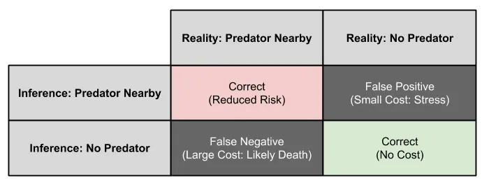
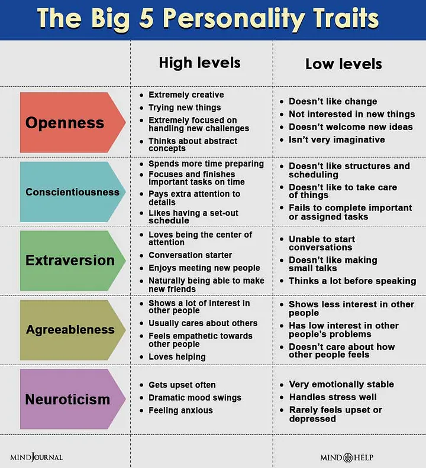

<title>What Causes Religious Belief? A Multilevel Naturalistic Account</title>
<meta name="viewport" content="width=device-width, initial-scale=1" />
<style>
      /* Scoped styles for Blogger dark themes. No white table backgrounds. */
      .ep-post {
        color: inherit;
        background: transparent;
        font-family:
          system-ui,
          -apple-system,
          BlinkMacSystemFont,
          "Segoe UI",
          Roboto,
          Helvetica,
          Arial,
          sans-serif;
        line-height: 1.65;
        font-size: 1rem;
        max-width: 980px;
        margin: 0 auto;
      }

      .ep-post * {
        box-sizing: border-box;
      }

      
      .ep-post {
        box-sizing: border-box;
        width: min(100%, 980px);
        padding-left: 1rem;
        padding-right: 1rem;
        overflow-wrap: break-word;
      }

      .ep-post img,
      .ep-post video,
      .ep-post canvas,
      .ep-post svg {
        max-width: 100%;
        height: auto;
      }

      .ep-post figure {
        margin: 1.15em 0;
        max-width: 100%;
      }

      .ep-post .mermaid {
        max-width: 100%;
        overflow-x: auto;
      }

      .ep-post .mermaid svg {
        max-width: 100%;
        height: auto;
      }

.ep-post h1,
      .ep-post h2,
      .ep-post h3,
      .ep-post h4 {
        line-height: 1.25;
        margin: 1.8em 0 0.65em;
        color: inherit;
      }

      .ep-post h1 {
        font-size: 2rem;
        border-bottom: 1px solid
          color-mix(in srgb, currentColor 24%, transparent);
        padding-bottom: 0.35em;
      }

      .ep-post h2 {
        font-size: 1.45rem;
        border-bottom: 1px solid
          color-mix(in srgb, currentColor 16%, transparent);
        padding-bottom: 0.25em;
      }

      .ep-post h3 {
        font-size: 1.15rem;
      }

      .ep-post p {
        margin: 0.75em 0;
      }

      .ep-post ul,
      .ep-post ol {
        margin: 0.65em 0 0.9em 1.35em;
        padding: 0;
      }

      .ep-post li {
        margin: 0.22em 0;
      }

      .ep-post a {
        color: inherit;
        text-decoration: underline;
        text-underline-offset: 0.16em;
      }

      .ep-post strong {
        font-weight: 700;
      }

      .ep-post code {
        background: color-mix(in srgb, currentColor 10%, transparent);
        color: inherit;
        border: 1px solid color-mix(in srgb, currentColor 16%, transparent);
        border-radius: 0.25rem;
        padding: 0.08em 0.28em;
        font-family:
          ui-monospace, SFMono-Regular, Menlo, Consolas, "Liberation Mono",
          monospace;
        font-size: 0.92em;
      }

      .ep-post pre {
        background: color-mix(in srgb, currentColor 7%, transparent);
        color: inherit;
        border: 1px solid color-mix(in srgb, currentColor 18%, transparent);
        border-radius: 0.6rem;
        padding: 1rem;
        overflow-x: auto;
      }

      .ep-post pre code {
        background: transparent;
        border: 0;
        padding: 0;
      }

      .ep-post blockquote {
        margin: 1em 0;
        padding: 0.2em 0 0.2em 1em;
        border-left: 3px solid color-mix(in srgb, currentColor 32%, transparent);
        color: color-mix(in srgb, currentColor 88%, transparent);
      }

      /* =========================================================
   Readable Blogger tables
   ========================================================= */

      .ep-post .table-wrap {
        width: 100%;
        max-width: 100%;
        overflow-x: auto;
        overflow-y: hidden;
        -webkit-overflow-scrolling: touch;
        margin: 1.15em 0;
        border: 1px solid color-mix(in srgb, currentColor 16%, transparent);
        border-radius: 0.65rem;
        background: transparent !important;
      }

      .ep-post table {
        width: 100%;
        border-collapse: collapse;
        table-layout: fixed;
        margin: 1.15em 0;
        font-size: 0.9em;
        line-height: 1.45;
        color: inherit;
        background: transparent !important;
      }

      .ep-post .table-wrap table {
        margin: 0;
      }

      /* Wider tables can scroll, but text still wraps instead of becoming giant. */
      .ep-post table.wide-table {
        min-width: 760px;
      }

      .ep-post table.extra-wide-table {
        min-width: 920px;
      }

      /* Long tables should feel more like a reference sheet. */
      .ep-post table.long-table {
        font-size: 0.86em;
      }

      .ep-post thead,
      .ep-post tbody,
      .ep-post tr,
      .ep-post th,
      .ep-post td {
        background: transparent !important;
        color: inherit;
      }

      .ep-post th,
      .ep-post td {
        border: 1px solid color-mix(in srgb, currentColor 22%, transparent);
        padding: 0.48em 0.6em;
        vertical-align: top;
        white-space: normal;
        overflow-wrap: break-word;
        word-break: normal;
        hyphens: auto;
      }

      .ep-post th {
        font-weight: 700;
        text-align: left;
        background: color-mix(in srgb, currentColor 9%, transparent) !important;
      }

      .ep-post tr:nth-child(even) td {
        background: color-mix(in srgb, currentColor 4%, transparent) !important;
      }

      /* First columns are usually labels/terms. Keep them compact but readable. */
      .ep-post table:not(.extra-wide-table) th:first-child,
      .ep-post table:not(.extra-wide-table) td:first-child {
        width: 22%;
      }

      /* Two-column explanatory tables: give the explanation more room. */
      .ep-post table.two-col th:first-child,
      .ep-post table.two-col td:first-child {
        width: 28%;
      }

      .ep-post table.two-col th:nth-child(2),
      .ep-post table.two-col td:nth-child(2) {
        width: 72%;
      }

      /* Three-column reference tables. */
      .ep-post table.three-col th:first-child,
      .ep-post table.three-col td:first-child {
        width: 22%;
      }

      .ep-post table.three-col th:nth-child(2),
      .ep-post table.three-col td:nth-child(2) {
        width: 43%;
      }

      .ep-post table.three-col th:nth-child(3),
      .ep-post table.three-col td:nth-child(3) {
        width: 35%;
      }

      /* Keep short utility columns compact when manually applied. */
      .ep-post th.short,
      .ep-post td.short,
      .ep-post th.date,
      .ep-post td.date,
      .ep-post th.number,
      .ep-post td.number {
        width: 1%;
        white-space: nowrap;
      }

      /* Use on text-heavy columns when editing by hand later. */
      .ep-post th.long,
      .ep-post td.long,
      .ep-post th.description,
      .ep-post td.description,
      .ep-post th.notes,
      .ep-post td.notes {
        min-width: 14rem;
        line-height: 1.5;
        white-space: normal;
        overflow-wrap: break-word;
      }

      /* Dense option for especially long tables. */
      .ep-post table.dense th,
      .ep-post table.dense td {
        padding: 0.38em 0.5em;
        font-size: 0.96em;
        line-height: 1.42;
      }

      /* Math support */
      .ep-post .mjx-container {
        overflow-x: auto;
        overflow-y: hidden;
        max-width: 100%;
      }

      .ep-post .math-block {
        margin: 1em 0;
        overflow-x: auto;
      }

      @supports not (color: color-mix(in srgb, white 50%, black)) {
        .ep-post h1,
        .ep-post h2 {
          border-bottom-color: rgba(128, 128, 128, 0.35);
        }

        .ep-post th,
        .ep-post td {
          border-color: rgba(128, 128, 128, 0.35);
        }

        .ep-post th {
          background: rgba(128, 128, 128, 0.12) !important;
        }

        .ep-post tr:nth-child(even) td {
          background: rgba(128, 128, 128, 0.06) !important;
        }

        .ep-post code,
        .ep-post pre {
          background: rgba(128, 128, 128, 0.12);
          border-color: rgba(128, 128, 128, 0.25);
        }

        .ep-post .table-wrap {
          border-color: rgba(128, 128, 128, 0.25);
        }
      }

      /* Mobile: convert tables into readable cards instead of squeezed grids. */
      @media (max-width: 720px) {
        .ep-post {
          font-size: 0.98rem;
        }

        .ep-post h1 {
          font-size: 1.65rem;
        }

        .ep-post h2 {
          font-size: 1.28rem;
        }

        .ep-post .table-wrap {
          overflow-x: visible;
          border: 0;
          border-radius: 0;
          margin: 1.1em 0;
        }

        .ep-post table,
        .ep-post table.wide-table,
        .ep-post table.extra-wide-table,
        .ep-post table.long-table {
          display: block;
          width: 100%;
          min-width: 0;
          max-width: 100%;
          font-size: 0.92em;
          border: 0;
        }

        .ep-post thead {
          display: none;
        }

        .ep-post tbody,
        .ep-post tr,
        .ep-post td {
          display: block;
          width: 100% !important;
        }

        .ep-post tr {
          margin: 0 0 0.9em;
          border: 1px solid color-mix(in srgb, currentColor 20%, transparent);
          border-radius: 0.65rem;
          overflow: hidden;
          background: color-mix(
            in srgb,
            currentColor 3%,
            transparent
          ) !important;
        }

        .ep-post td {
          border: 0;
          border-bottom: 1px solid
            color-mix(in srgb, currentColor 14%, transparent);
          padding: 0.55em 0.7em;
          line-height: 1.5;
        }

        .ep-post td:last-child {
          border-bottom: 0;
        }

        .ep-post td::before {
          content: attr(data-label);
          display: block;
          margin-bottom: 0.18em;
          font-size: 0.78em;
          line-height: 1.25;
          font-weight: 700;
          letter-spacing: 0.02em;
          text-transform: uppercase;
          color: color-mix(in srgb, currentColor 72%, transparent);
        }
      }
    

      /* Phase 2 structural hierarchy */
      .ep-post .ep-part-banner {
        margin: 3.2em 0 1.1em;
        padding: 0.9em 1em;
        border-top: 2px solid color-mix(in srgb, currentColor 34%, transparent);
        border-bottom: 1px solid color-mix(in srgb, currentColor 18%, transparent);
        background: color-mix(in srgb, currentColor 4%, transparent);
      }
      .ep-post .ep-part-banner .ep-part-kicker {
        display: block;
        font-size: 0.78em;
        font-weight: 700;
        letter-spacing: 0.08em;
        text-transform: uppercase;
        opacity: 0.72;
        margin-bottom: 0.18em;
      }
      .ep-post .ep-part-banner .ep-part-title {
        display: block;
        margin: 0.08em 0 0.24em;
        padding: 0;
        border: 0;
        font-size: 1.72rem;
        line-height: 1.2;
        font-weight: 750;
      }
      .ep-post h2.ep-source-section {
        margin-top: 2.2em;
        padding-top: 0.35em;
        border-top: 1px solid color-mix(in srgb, currentColor 14%, transparent);
      }
      .ep-post .ep-toc {
        margin: 0.8em 0 2.2em;
      }
      .ep-post .ep-toc-part {
        margin: 1.15em 0;
      }
      .ep-post .ep-toc-part > p {
        margin-bottom: 0.25em;
        font-weight: 700;
      }
      .ep-post .ep-toc-part ul ul {
        margin-top: 0.25em;
        margin-bottom: 0.4em;
      }


      /* =========================================================
         Phase 4: editorial presentation system
         ========================================================= */
      .ep-post .chapter-lead {
        font-size: 1.04em;
        line-height: 1.68;
        margin: 0.9em 0 1.2em;
      }

      .ep-post .concept-callout,
      .ep-post .formula-callout,
      .ep-post .core-claim {
        margin: 1.05em 0;
        padding: 0.78em 0.95em;
        border-left: 4px solid color-mix(in srgb, currentColor 34%, transparent);
        background: color-mix(in srgb, currentColor 5%, transparent);
        border-radius: 0.35rem;
      }

      .ep-post .formula-callout {
        text-align: center;
        font-weight: 650;
        letter-spacing: 0.01em;
      }

      .ep-post ul.compact-grid,
      .ep-post ul.question-grid {
        list-style-position: outside;
        display: grid;
        grid-template-columns: repeat(2, minmax(0, 1fr));
        gap: 0.28em 1.6em;
        margin: 0.8em 0 1.05em 1.25em;
      }

      .ep-post ul.compact-grid li,
      .ep-post ul.question-grid li {
        break-inside: avoid;
        padding-right: 0.4em;
      }

      .ep-post .checkpoint-block,
      .ep-post .learning-insight-block {
        margin: 1.6em 0;
        padding: 0.35em 1em 0.85em;
        border: 1px solid color-mix(in srgb, currentColor 18%, transparent);
        border-radius: 0.7rem;
        background: color-mix(in srgb, currentColor 3%, transparent);
      }

      .ep-post .checkpoint-block > h2,
      .ep-post .checkpoint-block > h3,
      .ep-post .learning-insight-block > h3 {
        margin-top: 0.65em;
      }

      .ep-post table.comparison-table th:first-child,
      .ep-post table.comparison-table td:first-child {
        width: 32%;
      }

      .ep-post table.worksheet-table th:first-child,
      .ep-post table.worksheet-table td:first-child {
        width: 24%;
      }

      .ep-post table.glossary-table th:first-child,
      .ep-post table.glossary-table td:first-child {
        width: 18%;
      }

      .ep-post table.lens-table th:first-child,
      .ep-post table.lens-table td:first-child {
        width: 24%;
      }

      @media (max-width: 720px) {
        .ep-post ul.compact-grid,
        .ep-post ul.question-grid {
          grid-template-columns: 1fr;
          gap: 0.2em;
        }

        .ep-post .concept-callout,
        .ep-post .formula-callout,
        .ep-post .core-claim {
          padding: 0.7em 0.8em;
        }
      }


      /* =========================================================
         Phase 6: section-level coherence and navigation
         ========================================================= */
      .ep-post .chapter-guide {
        margin: 0.8em 0 1.25em;
        padding: 0.72em 0.9em;
        border: 1px solid color-mix(in srgb, currentColor 16%, transparent);
        border-radius: 0.55rem;
        background: color-mix(in srgb, currentColor 2.5%, transparent);
      }
      .ep-post .chapter-guide p {
        margin: 0.18em 0;
      }
      .ep-post .chapter-guide .chapter-path {
        font-size: 0.94em;
        opacity: 0.88;
      }
      .ep-post .chapter-transition {
        margin: 1.45em 0 0.4em;
        padding-top: 0.85em;
        border-top: 1px solid color-mix(in srgb, currentColor 16%, transparent);
        font-style: italic;
      }
      .ep-post .ep-part-banner .ep-part-summary {
        display: block;
        margin-top: 0.42em;
        max-width: 72rem;
        font-size: 0.92em;
        line-height: 1.5;
        font-weight: 400;
        opacity: 0.82;
      }

      .ep-post header.ep-part-banner {
        clear: both;
        position: relative;
      }
      .ep-post .checkpoint-block + header.ep-part-banner {
        margin-top: 3.8em;
      }
</style>
<script>
      window.MathJax = {
        tex: {
          inlineMath: [
            ["\\(", "\\)"],
            ["$", "$"],
          ],
          displayMath: [
            ["\\[", "\\]"],
            ["$$", "$$"],
          ],
          processEscapes: true,
        },
        options: {
          skipHtmlTags: [
            "script",
            "noscript",
            "style",
            "textarea",
            "pre",
            "code",
          ],
        },
      };
    </script>
<script async="" src="https://cdn.jsdelivr.net/npm/mathjax@3/es5/tex-chtml.js"></script>
<article class="ep-post"><h1>What Causes Religious Belief? A Multilevel Naturalistic Account</h1><p><strong>Central question:</strong> If religiosity varies across people, places, and historical periods, what biological, cognitive, psychological, social, and cultural conditions help explain who believes, what they believe, and how strongly they believe it?</p><p>
   As I’ve begun converging on the idea that religious belief is
  independent of evidential reasoning, I began to ask “What factors contribute
  to, mediate, moderate, and impact the presence and level of religiosity?”
  Observing the statistical variability in religiosity seems to imply that there
  are predictors correlated with what you believe and the strength of
  conviction. I now ask myself: “What are they?” In addition, are there game
  theoretic explanations for the presence of belief? Are there sociological and
  economic aspects to belief? Is it biopsychosocial? How about evolutionary
  aspects and neurophysiology? This is obviously an incredibly complex phenomenon, so there won’t be one explanation but various candidates that
  collectively seem very plausible. The main point is that there seems to be a
  predisposition to form religious beliefs independent of the mechanisms within
  any particular religion that strengthen adherence. I first want to outline
  what I've been reading regarding the conditions enabling religiosity. Then
  we can investigate the internal dynamics particular to theistic religions that
  strengthen the adherence to "religiosity". This analysis can be seen as two
  fold: first we identify enabling conditions, similar to identifying the
  <a href="https://simple.wikipedia.org/wiki/INUS_condition">INUS</a> conditions
  enabling the possibility of a forest fire, and second we investigate the
  dynamics that allow the fire to spread and grow. 
</p><p>
  Is religion about belief in the truth of its content, as many devout believers
  will claim? If so, why would there be so much variability in the content of
  each belief, and fluctuations over time? We can be sure of mathematical
  theorems such as the quadratic formula. That seems to "transcend" space and
  time. You cannot argue against it unless you wish to challenge the axioms of
  algebra. Why wouldn’t religious belief hold this status if the obviousness of
  its propositional content is unquestionable? There are biblical answers to
  this: Hardened hearts, damned lies, and demons. None of these come close to
  being satisfactory for me; hence a “naturalistic” explanation is required.
</p><nav aria-label="Table of contents" class="ep-toc"><h2>Table of Contents</h2><p class="ep-toc-intro">Jump to a section:</p><ol><li><a href="#what-exactly-are-we-trying-to-explain">What Exactly Are We Trying to Explain?</a></li><li><a href="#historical-and-social-transmission-why-this-religion-rather-than-another">Historical and Social Transmission: Why This Religion Rather Than Another?</a></li><li><a href="#belief-is-not-simply-a-choice">Belief Is Not Simply a Choice</a></li><li><a href="#cognitive-preconditions-for-supernatural-belief">Cognitive Preconditions for Supernatural Belief</a><ol><li><a href="#hyperactive-agency-detection-hadd">Hyperactive Agency Detection (HADD)</a></li></ol></li><li><a href="#boundary-conditions-objections-and-the-hadd-debate">Boundary Conditions, Objections, and the HADD Debate</a><ol><li><a href="#selective-anthropomorphism-and-teleological-thinking">Selective Anthropomorphism and Teleological Thinking</a></li><li><a href="#teleology-aristotle-and-a-philosophical-application">Teleology, Aristotle, and a Philosophical Application</a></li><li><a href="#mentalization-and-the-multivariate-cognitive-model">Mentalization and the Multivariate Cognitive Model</a></li><li><a href="#agency-detection-is-not-the-same-as-anthropomorphism">Agency Detection Is Not the Same as Anthropomorphism</a></li><li><a href="#case-study-reading-a-contrary-result-in-context">Case Study: Reading a Contrary Result in Context</a></li></ol></li><li><a href="#related-cognitive-biases-apophenia-and-pareidolia">Related Cognitive Biases: Apophenia and Pareidolia</a></li><li><a href="#individual-differences-and-context">Individual Differences and Context</a><ol><li><a href="#neurology">Neurology</a></li><li><a href="#affect-threat-and-existential-security">Affect, Threat, and Existential Security</a></li><li><a href="#analytic-and-intuitive-cognitive-styles">Analytic and Intuitive Cognitive Styles</a></li><li><a href="#education-and-intellectual-development">Education and Intellectual Development</a></li><li><a href="#personality">Personality</a></li></ol></li><li><a href="#from-private-intuition-to-social-commitment">From Private Intuition to Social Commitment</a><ol><li><a href="#credibility-enhancing-displays-and-costly-signals">Credibility-Enhancing Displays and Costly Signals</a></li><li><a href="#memory-testimony-and-social-learning">Memory, Testimony, and Social Learning</a></li></ol></li><li><a href="#biology-cultural-evolution-and-religious-change">Biology, Cultural Evolution, and Religious Change</a><ol><li><a href="#religions-as-evolving-cultural-systems">Religions as Evolving Cultural Systems</a></li><li><a href="#myth-metaphor-and-cultural-diffusion">Myth, Metaphor, and Cultural Diffusion</a></li></ol></li><li><a href="#a-multilevel-model-of-religiosity">A Multilevel Model of Religiosity</a></li><li><a href="#what-this-doesand-does-notsay-about-truth">What This Does—and Does Not—Say About Truth</a></li><li><a href="#further-resources">Further Resources</a></li></ol></nav><h2 id="what-exactly-are-we-trying-to-explain">What Exactly Are We Trying to Explain?</h2><p>“Religiosity” is not one thing. A clearer analysis separates several outcomes that can have different causes: <strong>the presence of supernatural belief, the content of the religion, the strength of conviction, religious practice, persistence over time, and conversion or deconversion.</strong> A mechanism that helps explain one of these outcomes does not automatically explain the others.</p><div class="table-wrap"><table class="three-col wide-table long-table"><thead><tr><th>Level</th><th>Candidate mechanisms</th><th>What they may help explain</th></tr></thead><tbody><tr><td data-label="Level">Biological</td><td data-label="Candidate mechanisms">Genetic and neurological variation; evolved cognitive capacities</td><td data-label="What they may help explain">Baseline dispositions and individual differences</td></tr><tr><td data-label="Level">Cognitive</td><td data-label="Candidate mechanisms">Agency detection, teleology, mentalization, dualism, apophenia</td><td data-label="What they may help explain">Why supernatural or purposive interpretations are cognitively available</td></tr><tr><td data-label="Level">Psychological</td><td data-label="Candidate mechanisms">Affect, threat, personality, cognitive style</td><td data-label="What they may help explain">Susceptibility, intensity, and response to uncertainty</td></tr><tr><td data-label="Level">Social</td><td data-label="Candidate mechanisms">Family, peers, authority, testimony, CREDS, costly signaling</td><td data-label="What they may help explain">Transmission, commitment, and persistence</td></tr><tr><td data-label="Level">Political / economic</td><td data-label="Candidate mechanisms">Security, institutions, hierarchy, information access</td><td data-label="What they may help explain">Population-level prevalence and stability</td></tr><tr><td data-label="Level">Cultural-evolutionary</td><td data-label="Candidate mechanisms">Diffusion, competition, syncretism, selection, institutional adaptation</td><td data-label="What they may help explain">Why religions change, fragment, and persist historically</td></tr></tbody></table></div><p>The INUS analogy introduced below is useful precisely because it prevents a single-cause story. Oxygen is important for a fire but does not, by itself, produce one. Likewise, cognitive predispositions may be widespread while particular religious commitments require additional social, historical, and institutional conditions.</p><h2 id="historical-and-social-transmission-why-this-religion-rather-than-another">Historical and Social Transmission: Why This Religion Rather Than Another?</h2><p>
  If we go back a few generations, the United States used to be predominantly
  Protestant. Why Protestant and not Catholic? Well, many of the initial
  immigrants to North America fled religious persecution in Europe or simply
  came here to start anew. Protestant literally means “to protest”; but the
  Catholic Church saw them as heretics. Therefore, as the “Just War” ensues,
  subsequent generations and immigration patterns are impacted. Northern
  Europeans begin to settle in North America, and as Manifest Destiny initiates,
  we spread and reproduce, creating further generations of Protestant reformers
  who practice the religion properly (true believers). What are the odds a child
  born will believe in purgatory? As economic prospects in North America
  continue to grow, Irish and Italian immigrants wish to share the prosperity.
  As they arrive by boat, the level of anti-Catholicism is horrendous. This is
  Rome extending its reach to spread the false lies espoused by priests. A Holy
  War is subtly forming, yet again. For the immigrants who came from Southern
  Europe, what are the odds they will become born again evangelicals?
</p><p>
  Let’s say you are a Christian living in southern Spain during the early
  Islamic Caliphate of Cordoba. You’ve never been introduced to Islam, and you
  now have an aggressor giving you the ultimatum to convert peacefully and
  immerse yourself within society. Your degree of religious conviction has now
  shifted types after being introduced to new information and social pressure.
  Shortly after Reconquista, what do you think the religious demographics looked
  like? This feels like a predictable social phenomenon.
</p><p>
  Now consider you are a Slavic pagan ruler overseeing a collection of
  decentralized tribes practicing a variety of religions. Roman armies bringing
  food and culture, very politely entice the pagan ruler to consider converting
  some of his subjects (probably the
  <a href="https://en.wikipedia.org/wiki/Opinion_leadership">opinion leaders</a>) in exchange for the economic security provided by the Romans. Your
  illiterate subjects will have no problem accepting this new god who appears
  more powerful than any of the deities they currently worship. The economic
  benefits and security don’t seem all that bad either. Could the rulers
  decision to convert his community have anything to do with factors outside of
  the “truth” of the proposition? Does it not seem coincidental that modern
  missions tend to target similar illiterate demographics who need economic
  support and a sense of existential security?
</p><p>
  The point of this brief history is to illustrate some of the ways people come to belief. Simply
  viewing history compels us to recognize the role of politics and sociology
  contributing to who believes what, when they believe it, and to what degree of
  conviction. This implies religious belief is something that “is caused”; at a
  very minimum it can be studied at the sociological level. Asking what causes
  religious belief also implies the question “why one belief over another?\”
  Consider “religiosity” as a variable that can range from zero to some upper
  limit, and the content of the religion can be one of the many existing, have
  existed, or soon to exist religions. Viewed this way,
  <a href="https://www.frontiersin.org/journals/psychology/articles/10.3389/fpsyg.2019.02560/full">The content of your belief can differ in space and time, and your degree of
    conviction can also range and seems to be explainable in part by various
    factors</a>. There also seems to be evolutionary aspects to religious beliefs. We can
  see this in real time, with the emergence of faiths like Mormonism; such
  splintering of belief systems from a common ancestor seems to be
  characteristic of religious institutions. Take another example;
  <a href="https://en.wikipedia.org/wiki/Open_theism">Open theism</a>. Will
  people radically change their conceptualization of God? Time will tell, but it
  seems to be stirring up controversy. Theology seems to be one of the
  mechanisms by which religious beliefs evolve over time; we will take a look at
  this institution later.  
</p><p>
  All of these situations imply the existence of factors that can influence who
  believes what and to what degree. Armchair theorizing about causes seems
  simple enough but let’s see what some of the academic research points to.
</p><p>
  Let’s start with the
  <a href="https://www.pewresearch.org/religion/religious-landscape-study/">religious landscape survey</a>
  to see what the trends are in the United States. The fascinating result of the
  study is the
  <a href="https://www.pewresearch.org/religion/2022/09/13/modeling-the-future-of-religion-in-america/">rapid decline in Christianity</a>. The projections are even more startling: Christianity will drop to as low
  as 35 percent of the total population by 2070. The data also indicate that
  most of the people who deconvert become some sort of religiously unaffiliated,
  as opposed to switching religions. The data also show that the probability of
  a Christian becoming a nonbeliever is much larger than a nonbeliever
  becoming a Christian;
  <a href="https://www.pewresearch.org/religion/2022/09/13/how-u-s-religious-composition-has-changed-in-recent-decades/">there is a degree of stickiness associated with non belief</a>
  . </p><p>Young Americans are less likely to become and stay a Christian. I don’t have
  any data on this but it would be interesting to see the decline in level of
  fundamentalism within the religion; ad hoc observation leads me to suspect
  this although I could be biased towards selecting these observations. Now
  consider Scandinavian countries such as Iceland, Norway, and Sweden, factor in
  Western European countries like France and England, and it appears that this
  religiously unaffiliated wave is considerably global and unique to western
  (predominantly Christian) nations. What explains this data? What are the
  mechanisms contributing to lack of belief and its stickiness? How can someone
  be “made” to believe something? How can I make myself believe something that I
  don’t believe? Pew research has some
  <a href="https://www.pewresearch.org/religion/2021/09/21/causes-of-religious-change/">sociological explanatory factors</a>
  but I would also like to answer these questions at a more fundamental level
  and at a very common sense level. Understanding why people don’t believe seems
  to require understanding why people come to believe in the first place. The
  fact that non-belief is so prevalent in non-authoritarian societies with Free
  Speech laws and higher literacy rates also seems indicative of something. Take
  a look at this video to see what other parts of the world look like: <a href="https://youtu.be/HbO7yf9sahg?si=gzh-g-vJPQyAgyq0">The Least Religious Countries in the World</a>.
</p><h2 id="belief-is-not-simply-a-choice">Belief Is Not Simply a Choice</h2><p>
  At some level, it seems like belief in anything is not simply a choice. I
  don’t wake up one day and decide to believe in the Holy Spirit. This shouldn’t
  come as a surprise to a Christian familiar with scripture who knows that faith
  is only given to you by grace of God. </p><p>Consider the statement 2+2=5, I simply
  cannot bring myself to believe it; no matter how hard I try. Consider an
  empirical statement like “when applying heat to a frozen substance it will
  melt”, I also cannot bring myself to believe something to the contrary. There
  is a philosophical concept called
  <a href="https://iep.utm.edu/doxastic-voluntarism/">Doxastic Voluntarism</a>,
  claiming that people have voluntary control over their beliefs. I prefer the
  weaker version, Indirect doxastic voluntarism which claims "that people
  have indirect voluntary control over at least some of their beliefs, for
  example, by doing research and evaluating evidence", since it seems to align
  better with modern cognitive science. The concept raises interesting questions
  about the nature of belief acquisition and formation. In the examples I listed
  above, there seems to be enabling conditions that prompt me toward belief, such
  as direct experience or analyticity of the proposition. Religious propositions
  tend to be quite distinct from the latter two examples, containing elements of
  "prophecy", mysticism, hearsay, and embellishment. Take a random religious
  dogma, the doctrine of the trinity; this is literally a contradiction and also
  contains supernatural elements dependent on prophetic scripture, among other
  background assumptions. I simply cannot bring myself to believe a proposition
  of this type, and yet many others, billions in fact, dogmatically accept it.
  So I must ask myself, what are the enabling conditions that have led these
  people to believe such a proposition? In the article I listed above, they
  characterize belief this way:
</p><blockquote>
<p>
    To say that a person believes some proposition is to say that, at a given
    moment, the person either
  </p>
<p>i) comprehends and affirms the proposition, or</p>
<p>
    ii) is disposed to comprehend and to affirm the proposition (cf. Audi 1994,
    Price 1954, Ryle 2000, Scott-Kakures 1994, Schwitzgebel 2002).
  </p>
</blockquote><h2 id="cognitive-preconditions-for-supernatural-belief">Cognitive Preconditions for Supernatural Belief</h2><p>
  The word "<a href="https://en.wikipedia.org/wiki/Disposition">disposition</a>"
  highlights what I am trying to explain. Certain religious beliefs seem more
  likely to be accepted if you are predisposed in a particular way. With the
  first two propositions I listed, it seems everyone would believe those, so
  there is probably a set of universal enabling conditions among all humans to
  believe minimal propositions. With the latter religious example, not everyone
  will believe it, so there is probably a set of additional enabling conditions
  that predispose belief to be shaped in particular ways. Perhaps elements of
  this set are common to all humans, but when combined with additional
  conditions, they interact to enable beliefs we might label as "religious". We
  can think about this in terms of INUS conditions; oxygen is necessary for fire
  but not sufficient. Complex combinations of conditions, in conjunction with
  oxygen, will bring about the effect. Given this analogy, we can imagine that
  there are universal conditions common to all human cognitive faculties, such
  as oxygen, that when combined with additional factors, enable the formation of
  religious beliefs. </p><p>Are we hardwired to have “supernatural” beliefs that bias
  our assessment of particular phenomenon in a “religious” way? Is there some
  cognitive mechanism that predisposes our belief formation towards something we
  would call "religious"? Hyperactive agency Detection Device is a concept
  proposed and empirically demonstrated; suggesting that we have a tendency to
  see “agency”, purpose, and intention in complicated sequences of natural
  events that are completely contrived. A brief video explains
  <a href="https://en.wikipedia.org/wiki/Agent_detection">agency detection</a>
  in detail:
  <a href="https://youtu.be/LtDGI7Qzt88?si=GJEM_nOaA7asqRMc">Psychology of Belief Part 9: Agent Detection</a>.
</p><h3 id="hyperactive-agency-detection-hadd">Hyperactive Agency Detection (HADD)</h3><p>
  Suppose you hear a creak upstairs in an old house; the first thing you assume
  is “someone” being up there causing the creak, not structural deficiencies or
  physical explanations. Evolutionary psychologists explain that it’s our innate
  tendency to have this instinctual response to ambiguity or uncertain
  situations. Agency or purpose is a simple rule of thumb that can help you
  avoid dangerous situations where there might be agential causes. In other
  words, it was beneficial for our survival to hyperactively respond to
  situations of uncertainty with attributions of agency. There is a lot of
  research on this, and
  <a href="https://www.researchgate.net/publication/280056740_Is_Hyperactive_Agency_Detection_Search_for_Meaning_and_Intention_and_Language_Perception_Governed_by_a_Normal_CHRNA7_Gene">some developmental psychologists are even supposing they have found the
    gene causing it</a>. Some are also proposing ways this
  <a href="https://religions.wiki/index.php/Agent_detection_bias">agency detection bias</a>
  is
  <a href="https://www.tandfonline.com/doi/full/10.1080/2153599X.2018.1453529">interacting with other known psychological biases</a>.
  <a href="https://www.tandfonline.com/doi/full/10.1080/2153599X.2017.1362662">This paper is interesting in that it identifies boundary conditions</a>
  for the proposed concept. Is it possible that religious belief systems exploit
  this basic cognitive mechanism?
</p><p>
<a href="https://www.goodreads.com/quotes/10909697-there-is-an-universal-tendency-amongst-mankind-to-conceive-all">David Hume once said</a>:
</p><blockquote>
<p>
    There is an universal tendency among mankind to conceive all beings like
    themselves, and to transfer to every object those qualities of which they
    are intimately conscious. We find faces in the moon, armies in the clouds;
    and, by a natural propensity, if not corrected by experience and reflection,
    ascribe malice or goodwill to every thing that hurts or pleases us … trees,
    mountains and streams are personified, and the inanimate parts of nature
    acquire sentiment and passion.
  </p>
<p></p>
</blockquote><p>
  The key idea behind HADD is that hyperactive detection was selected for during
  our human evolutionary history. Other animals also have the ability to detect
  and respond to similar signals in their environment. It forms as a response to
  predation. This is not to say that all perception is reduced to this bias; it
  is just one of many cognitive faculties we leverage (in addition to the many
  other heuristics and biases) that simplify reasoning in a complex environment.
  The agent detector module in the brain classifies perceptual stimuli as friend
  or foe, kin or enemy etc. This classification is regulated by the
  <a href="https://thedecisionlab.com/biases/mere-exposure-effect">mere-exposure effect</a>
  and other factors such as
  <a href="https://en.wikipedia.org/wiki/Processing_fluency">processing fluency</a>. We do it all the time when we explain ambiguous situations or in attempts
  to make sense of an uncertain future. Let’s take a look at the payoff matrix
  below and relate it to theistic belief:
</p><div class="separator" style="clear: both; text-align: center">
<a href="img/image.png" style="margin-left: 1em; margin-right: 1em"></a>
</div><p>
  Replace “Predator” with “God Exists” and the calculation we implicitly make
  seems identical to Pascal’s wager. The False negative is Hell. The False
  Positive is just “a little bit less sinning” in your current mortal life.
  Since False Positives are low cost, we can easily anthropomorphize without
  additional costs being brought on to us. The payoffs associated with agency
  are asymmetric, hence they are hyperactive. In sum, the main idea is that
  HADD, combined with abstraction leads, to more complex religious beliefs
  forming. Religion for Breakfast has a nice description of the phenomenon:
  <a href="https://youtu.be/AT8bLaomvq0?si=N4jYjuQgimA9xzq7">Is Religion Biologically Hardwired?</a>
</p><div>
<div>
    Now I would argue, from my own experience of being non-theist, that HADD
    definitely resonates. However, I do not think it is sufficient to fully
    describe the emergence of theism. A moment of self reflection should be
    clear; all non-believers probably have this tendency to ascribe agency to
    non-agential phenomena. Sometimes when I come across seemingly random
    objects, I ascribe “purpose” as my reason for seeing it despite it being
    merely coincidental. Consider our constant tendency to describe economic
    events as the product of “malign intention of state actors” instead of
    complex nested processes leading to unexpected and emergent outcome in an
    economy. The first thing we point to for spooky events is agential; its
    unavoidable. Purpose is just one part of HADD; but you can see that its
    obvious we have it. The question becomes: could theistic religions emerge
    from such a simple structure. I think it is a necessary component of a
    sufficient set. Take away our predisposition to find agency everywhere, and
    most "scriptural revelations" are just random noise. One of the critics of
    HADD questions the direction of causality; does HADD cause religious belief,
    or does religious belief lead to hyperactive agency detection. Many of the
    critics claim that socialization is the main source of religious belief; a
    point we will look at in detail later. The point is that we all seem to be
    disposed in this particular way.
  </div>
<div><br/></div>
</div><h2 id="boundary-conditions-objections-and-the-hadd-debate">Boundary Conditions, Objections, and the HADD Debate</h2><p>The strongest version of the cognitive account should not claim that HADD is sufficient to generate a mature religion. The more defensible claim is modular: ordinary cognitive tendencies can make certain classes of ideas easier to generate or accept, while culture and social learning determine whether those intuitions become stable commitments to a particular religious system.</p><p>A natural objection is whether HADD is actually supported by the evidence. One way to see the dispute is to examine how an <a href="https://beliefmap.org/god/intuition/hyperactive-agency-detection-device">apologetics website</a> responds to the argument. The site disagrees. Their criticism is not that religious belief is
  caused by socialization mechanisms and cultural factors, since this would also
  imply the arbitrariness of their beliefs. This website points to
  <b>one </b>article that “disproves” HADD. This is very typical of apologetics;
  cherry-picking one study among the thousands that confirms their beliefs,
  while ignoring disconfirming evidence. I mentioned this in another blog post;
  this is part of the “Evidence Game” apologists play to make it appear as if
  they’re actually doing rigorous empirical investigation. As I will show later,
  this is actually one of the institutional mechanisms common to Abrahamic
  traditions that is necessary for retaining adherents. What's funny is that,
  even in the article’s abstract, they mention the surprise they have,
  <b>given it is a minority finding</b>. </p><p>A further dive into the article (<a href="https://www.sciencedirect.com/science/article/abs/pii/S0010027713001492">Cognitive biases explain religious belief, paranormal belief, and belief in
    life’s purpose</a>) shows that apologists ignore the main thrust of the article; that religious
  belief is still mediated by cognitive biases. From the article:
</p><blockquote>
  Consistent with cognitive theories (Atran and Norenzayan, 2004, Barrett, 2000,
  Boyer, 2001), recent research has found that religious belief is rooted in
  intuitive processes and that conversely, religious disbelief can arise from
  analytic cognitive tendencies that block or override these intuitive
  processes. In one series of studies, Shenhav, Rand, and Greene (2012) found
  that individual differences in intuitive thinking predict more belief in God,
  controlling for several relevant demographic and psychological variables such
  as education level, relevant personality dimensions, and general intelligence.
  Pennycook, Cheyne, Seli, Koehler, and Fugelsang (2012) replicated and extended
  these individual difference findings, further showing that religious
  skepticism and skepticism about paranormal phenomena were less prevalent among
  intuitive thinkers, holding constant potentially confounding factors. In a
  series of experiments that agree with these mostly correlational findings,
  Gervais and Norenzayan (2012), as well as Shenhav et al. (2012) found that
  inducing analytic processing temporarily decreased religious belief. Taken
  together, these findings suggest that religious belief is anchored in
  intuitive cognitive biases, but they do not specifically pinpoint which
  particular intuitive processes are at the root of religious belief, and do not
  reveal the specific pathways by which these intuitive processes encourage
  religious belief.
</blockquote><p>
  So the thrust of the article is to propose a mechanism by which cognitive
  faculties generate religious belief. Not to disprove the existence of
  cognitive biases altogether. Furthermore, they want to show the extent to
  which anthropomorphizing leads to religious belief, and how prevalent it is in
  day-to-day perception. They investigate specific cognitive tendencies:
</p><blockquote>
<p>
    The cognitive tendencies we investigated were
    <a href="https://en.wikipedia.org/wiki/Mentalization">mentalizing</a>,
    <a href="https://en.wikipedia.org/wiki/Anthropomorphism">anthropomorphism</a>,
    <a href="https://en.wikipedia.org/wiki/Mind%E2%80%93body_dualism">mind-body dualism</a>
    and t<a href="https://en.wikipedia.org/wiki/Teleology">eleological thinking</a>.
  </p>
<p></p>
</blockquote><h3 id="selective-anthropomorphism-and-teleological-thinking">Selective Anthropomorphism and Teleological Thinking</h3><p>
  I’ve written before that the decline in “Teleology” is a very significant
  factor; because it means there are alternative explanations for the weird and
  uncertain world we live in. In the paper, the authors echo this.
</p><blockquote>
<p>
    Empirical work in psychology investigating anthropomorphism has taken a
    different perspective. Rather than showing that projecting human-like agency
    to the world is promiscuous and automatic, research has demonstrated this
    tendency to be selective (Waytz, Gray, Epley, &amp; Wegner, 2010) and
    motivated (Epley, Waytz, Akalis, &amp; Cacioppo, 2008). Studies have shown
    that people do not always see human minds in non-human entities and objects
    — they do so when they are lonely and want human companionship (Epley,
    Akalis, Waytz, &amp; Cacioppo, 2008), or when an entity behaves
    unpredictably and its behavior cannot be reliably predicted using other
    conceptual frameworks (Waytz, Morewedge, et al., 2010).
  </p>
<p></p>
</blockquote><p>
  What does this mean? HADD proposes a general tendency to have automatic
  responses that impose agency on the environment. But this can’t be true, given
  that people selectively impose agency on the world. They do it in specific
  circumstance: when an entity behaves unpredictably and its behavior cannot be
  predicted using alternative conceptual frameworks. In other words, we
  anthropomorphize to reduce uncertainty. If something is sufficiently complex,
  our default is to impose agency. This corresponds with my example of economic
  complexity. We also anthropomorphize when we are lonely; suggesting that our
  selectivity depends on social factors and economic security. So, as the
  scientific domain extends its reach to explain that the “miracles” we observe
  can be fully explained and predicted in a mechanistic framework, people rely
  less on teleological explanations. Purpose is less of an explanatory criterion
  in the age of mechanistic sciences; and has fundamentally transformed the way
  we interact with the world.
</p><blockquote>
<p>
    A third cognitive hypothesis is that religious beliefs are rooted in
    teleology. Teleology is the tendency to see things in the world as having a
    purpose and having been made for that purpose (Kelemen, 1999, Kelemen and
    DiYanni, 2005). This tendency is theorized to be a byproduct of ‘artifact
    cognition’. Part of our ability to understand artifacts is the capacity to
    see them as designed by agents with specific goals and motivations. This
    ability is sometimes referred to as ‘promiscuous’ when it is extended to
    things that were not made for any purpose. For example, children have the
    intuition that lions exist so that we can visit them at the zoo, clouds are
    for raining, and mountains are for climbing (Kelemen, 2004).
  </p>
<p></p>
</blockquote><h3 id="teleology-aristotle-and-a-philosophical-application">Teleology, Aristotle, and a Philosophical Application</h3><p>
  In other words, we have “Theistic predispositions”; we impose “purpose” on
  observations. In fact, this was “Science” before the Enlightenment.
  Aristotelian notions of science heavily relied upon teleological
  preconceptions. </p><p>Think of Aristotle's
  <a href="https://en.wikipedia.org/wiki/Four_causes">Four Causes</a>; it was
  built into the worldview that things had a purpose, the Sufficient Cause.
  This is what fancy arguments for God’s existence rely upon nowadays; a
  pre-modern Pagan conceptualization of Causation.
  <a href="https://en.wikipedia.org/wiki/Potentiality_and_actuality">Potentiality and Actuality</a>
  are at the core of St. Thomas Aquinas’s Five Ways. You will hear things such as “<a href="https://en.wikipedia.org/wiki/Unmoved_mover">The Unmoved Mover</a>” being recycled by apologist/philosophers like
  <a href="https://edwardfeser.blogspot.com/">Edward Feser</a> who literally
  make money selling apologetics books that rely a scholastic worldview.
  </p><p>Philosophers like this will try to “prove” God’s existence a priori using
  Aristotelian notions of causality. Now I think we should be highly skeptical
  of anyone who accepts premodern scientific notions and rejects Newtonian
  mechanics. It is kind of ridiculous given the utter superiority and
  performance of modern methodology. To reject all of our modern paradigms seems
  like
  <a href="https://en.wikipedia.org/wiki/Special_pleading">special pleading</a>.
  To modern ears, saying that a stone falling has an ultimate purpose seems
  ridiculous. And that is the point; we have rejected Aristotelian “science” for
  VERY good reason: It does not work. So when we reject Aristotle, we reject
  teleology as an explanatory mechanism. The irony for me however, is that
  Aristotle was reintroduced to Europe during Muslim conquests because
  Christianity deemed anything pagan as heretical, burned books, and destroyed
  all of the cultural achievements of Greek/Roman society. Baghdad was the
  cultural and intellectual capital of the world. And once reintroduced,
  theologians began referencing this material as part of their theology. After
  emerging from the Dark Ages, scholastic theologians made ancient pagan
  rhetoric part of their curriculum. Thankfully we had the Renaissance, so we
  could freely point out the flaws in Aristotelian and Biblical worldviews so
  we don’t need to be bogged down by pseudo-intellectual arguments such as “<a href="https://www.reddit.com/r/DebateAnAtheist/comments/huyh4h/aristotelian_argument/">The Unactualized Actualizer</a>”. If you are interested in hearing a philosophical debate between Atheist
  Philosopher of Religion, Graham Oppy and Ed Feser, see this <a href="https://www.youtube.com/live/m-80lQOlNOs?si=Ssa1YRaK51FB_VJs">link</a>.
</p><h3 id="mentalization-and-the-multivariate-cognitive-model">Mentalization and the Multivariate Cognitive Model</h3><p>
  Returning to the empirical model, Mind-body dualism, teleology, anthropomorphism,
  and mentalization are the cognitive tendencies the authors want to use as
  explanatory factors.
</p><blockquote>
<p>
    Mentalizing or Theory of Mind is the tendency to infer and think about the
    mental states of others. The key idea is that to interact with person-like
    supernatural beings, such as a personal God, spirits, ghosts, — a core
    feature of many religions — believers must try to understand their wishes,
    beliefs, and desires. Therefore, conceptualizing these beings requires
    mentalizing. Consistent with this, neuro-imaging studies found that among
    Christian believers in the US (Kapogiannis et al., 2009) and in Denmark
    (Schjoedt et al., 2009), thinking about or praying to God, activates brain
    regions associated with Theory of Mind.
  </p>
<p></p>
</blockquote><p>
  If there is variability in mentalizing capabilities, then there will be
  variability in each sample with respect to religiosity. The goal of the
  research is to discover whether mentalization predicts the subsequent pathways
  to belief in theism. Since cultural factors can confound the results, the
  researchers controlled for these (despite it being assumed that they play
  little part, by other cognitive scientists):
</p><blockquote>
<p>
    Of course, religious beliefs are not just an outcome of cognitive biases;
    they are also influenced by cultural learning, that is, growing up and
    living in a religious community increases the odds of being a believer,
    influences the particular religious beliefs one commits to, and explains the
    psychological impact of those beliefs (Cohen, 2009, Cohen and Hill, 2007,
    Gervais et al., 2011). However, researchers in the cognitive science of
    religion have often argued that culture’s role is limited and that cognitive
    biases are doing most of the work (Atran, 2002, Barrett, 2004, Barrett,
    2008, Bering, 2006, Bering, 2011, Bering et al., 2005). Therefore, we
    included a variable that reflects cultural exposure to religion (proportion
    of religious adherents in the participant’s local community) to investigate
    the relative contributions of cognitive and cultural influences on religious
    belief, with the important caveat that only one cultural variable was
    considered, limiting our ability to make strong inferences about cultural
    learning processes in religious beliefs. 
  </p>
</blockquote><blockquote>
<p>
    Given that mentalizing appears to underlie the other cognitive biases, we
    tested a model that starts with mentalizing, leading to anthropomorphism,
    mind-body dualism, and teleology, which in turn leads to belief in religious
    agents, in paranormal events and in life’s purpose. Given that there is
    scant empirical research about this topic, we were interested to know
    exactly which pathways from cognitive biases to the different beliefs would
    emerge. We also tested several alternative models against the data,
    including a reverse causation account that would argue that religious
    beliefs encourage cognitive biases, rather than the other way around.
  </p>
<p></p>
</blockquote><p>
  So if it was not misleading in the apologist website, the goal of the research
  was to test specific pathways that lead to theistic belief, not reject the
  framework all-together (as the apologist website implies); and to demonstrate
  the fact that cultural factors are significant (as other critics of
  anthropomorphism argue) which also undermines the apologetic position. This
  explains the title “Cognitive Biases Explain Religious Belief”; there is no
  avoiding this fact. The question is: Which ones and How?
  <a href="https://citeseerx.ist.psu.edu/document?repid=rep1&amp;type=pdf&amp;doi=914533b3f80c7fda190d8a5732839d5ef315885b">Here is a link to the full pape</a>r, and here is a basic discussion:
</p><blockquote>
<p>
    This research contributes to our current understanding of the cognitive
    tendencies that underlie supernatural belief in several important ways.
    First, our analysis suggests that the relationships are directional, going
    from cognitive biases to beliefs and not the other way around. The addition
    of the religious adherence measure adds to this directionality argument. The
    proportion of religious adherents in an individual’s county predicted belief
    in God, but it did not predict greater levels of dualism or teleology,
    implying that cognitive biases and cultural learning independently (and
    probably interactively) contribute to religious belief — they are not
    mutually exclusive explanations.
  </p>
<p></p>
</blockquote><p>
  So it seems interesting that the apologist website, very predictably, ignores
  the OTHER results indicating that cognitive biases are crucial in development
  of religious belief. And to further explicate the lack of genuine scholarship,
  they only take a snippet of the discussion which makes it seem as if the
  authors reject anthropomorphism altogether. Here is the full discussion:
</p><blockquote>
<p>
    This may be surprising given theories that argue that anthropomorphism and
    hyperactive agency detection are an underlying feature of all supernatural
    belief (Barrett, 2000, 2004, 2008; Guthrie, 1993, 1996). It is less
    surprising when one considers that the religious conviction of most of our
    sample is Christian or living in a majority-Christian culture. In
    Christianity, and in Abrahamic religions in general, God is
    anthropomorphized in the important sense that God has humanlike mental
    characteristics. God does not fit into the template of animism in the
    Christian tradition; he is superhuman, not human-like. He is a mega-mind
    without the frailty of a human body and without basic human needs, like
    hunger, or feelings (Gray et al., 2007). Perhaps more importantly, the
    negative relationship between the proportion of local religious adherents
    and anthropomorphism suggests that Christian believers may actually suppress
    the tendency to anthropomorphize the world. This is possibly due to the
    prohibition of animistic tendencies in Christian (and more broadly,
    Abrahamic) folk theology, in which attributing human-like mental states to
    non-humans, such as seeing spirits in mountains or trees, goes contrary to
    religious teachings, and in some instances is considered idolatry. Despite
    the lack of any relationship between anthropomorphism and belief in God,
    anthropomorphism still played an important role in other types of beliefs.
    Anthropomorphism predicted paranormal belief. Paranormal beliefs may be more
    influenced by individual differences in this dimension because they are less
    strongly regulated by religious institutions (at least in the West). For
    North Americans, belief in astrology and ESP are not culturally sanctioned
    the way that belief in God is. Rarely are people ousted from their family
    and community for questioning the accuracy of divination, or the
    plausibility of astral projection. It is possible that these types of
    beliefs are closer to our supernatural intuitions about the world. People
    may naturally be superstitious and prone to believing in some supernatural
    concepts, but may not passionately commit to God without additional cultural
    support (Gervais et al., 2011).
  </p>
<p></p>
</blockquote><p>The important point is not that one null or contrary result should be ignored; it is that one study does not by itself overturn a larger and more heterogeneous body of evidence. The paper itself offers possible explanations for the absent anthropomorphism effect and still finds important relationships between cognitive tendencies and other forms of supernatural belief. The appropriate conclusion is therefore narrower: anthropomorphism may play a smaller or more context-dependent role in some forms of theistic belief than stronger versions of the hypothesis predict. Replication and comparison across cultural settings are needed before making a broader claim.</p><p>
  You can view the author’s Google Scholar page (<a href="https://scholar.google.ca/citations?user=-0hh2rcAAAAJ&amp;hl=en">Aiyana K. Willard</a>) if you have interest in this research. With titles such as
  <a href="https://scholar.google.ca/citations?view_op=view_citation&amp;hl=en&amp;user=-0hh2rcAAAAJ&amp;citation_for_view=-0hh2rcAAAAJ%3A9yKSN-GCB0IC">Religious priming: A meta-analysis with a focus on prosociality</a>
  and
  <a href="https://scholar.google.ca/citations?view_op=view_citation&amp;hl=en&amp;user=-0hh2rcAAAAJ&amp;citation_for_view=-0hh2rcAAAAJ%3Au5HHmVD_uO8C">THE CULTURAL TRANSMISSION OF FAITH Why innate intuitions are necessary, but
    insufficient, to explain religious belief</a>, one can hardly assume that the author doesn’t admonish the evolutionary and
  social dynamics of belief.
</p><h3 id="agency-detection-is-not-the-same-as-anthropomorphism">Agency Detection Is Not the Same as Anthropomorphism</h3><p>Finally, agency detection and anthropomorphism should not be conflated. They are related but distinct constructs: a null or weak effect for anthropomorphism does not, by itself, constitute a test of agency detection. Treating the two as interchangeable therefore risks arguing against a stronger claim than the HADD framework actually requires. The distinction becomes clearer from the definition below:</p><blockquote>
<p>
    Agent detection is the inclination for animals, including humans, to presume
    the purposeful intervention of a sentient or intelligent agent in situations
    that may or may not involve one.
  </p>
<p></p>
</blockquote><p>
  Anthropomorphism is the tendency to attribute human attributes onto non-human
  entities. The two are similar but distinct. And furthermore, the researchers
  who initially conceptualized the term qualify the extent of its effect:
</p><blockquote>
<p>
    Gray and Wegner also said that agent detection is likely to be a “foundation
    for human belief in God” but “simple overattribution of agency cannot
    entirely account for the belief in God…” because the human ability to form a
    theory of mind and what they refer to as “existential theory of mind” are
    also required to “give us the basic cognitive capacity to conceive of
    God.”[2]
  </p>
<p></p>
</blockquote><h3 id="case-study-reading-a-contrary-result-in-context">Case Study: Reading a Contrary Result in Context</h3><p>This kind of selective presentation is frustrating because it obscures what the cited research actually says. Apologetic material is often consumed within communities already committed to the conclusion, so careful source comparison becomes especially important. In this case, the relevant problems are methodological and identifiable: the presentation cherry-picks a paper, treats a boundary condition as a wholesale refutation, overlooks conclusions that do not support its framing, and gives insufficient attention to contrary evidence. The stronger criticism is therefore not an accusation about motives; it is that the argument does not represent the evidential record proportionately. For a compilation of arguments and sources offered in support of HADD, see <a href="https://www.atheismandthecity.com/2015/03/hyperactive-agency-detection-just-so.html">this article</a>.</p><blockquote>
<p>
    How widely endorsed is this view? In A New Science of Religion Wilkins &amp;
    Griffiths note:
  </p>
<p>
    The idea that religious belief is to a large extent the result of mental
    adaptations for agency detection has been endorsed by several leading
    evolutionary theorists of religion (Guthrie 1993; Boyer 2001; Atran 2002;
    Barrett 2005). Broadly, these theorists suggest that there are specialized
    mental mechanisms for the detection of agency behind significant events.
    These have evolved because the detection of agency — “who did that and why?”
    — has been a critical task facing human beings throughout their evolution.
    These mechanisms are “hyperactive,” leading us to attribute natural events
    to a hidden agent or agents. (142)
  </p>
<p>
    So widespread is this view, that even the Christian philosopher Michael J.
    Murray, a well-known occasional critic of the HADD hypothesis, calls it in
    his book Science and Religion in Dialogue, “the standard model.” (460) And
    even famed Christian apologist William Lane Craig, notorious among theistic
    and atheistic debaters, acknowledges it on his website, Reasonable Faith,
    writing:
  </p>
<p>
    We humans have an inveterate tendency to ascribe personal agency to
    non-human creatures and even objects. We talk to our house plants, our cars,
    our computers. In fact some cognitive psychologists think that this tendency
    is actually hard-wired into the human brain. They call it the Hyper-active
    Agency Detection Device (HADD). We treat other things, even inanimate
    objects, as though they were agents.
  </p>
</blockquote><h2 id="related-cognitive-biases-apophenia-and-pareidolia">Related Cognitive Biases: Apophenia and Pareidolia</h2><p>
  Closely related is
  <a href="https://en.wikipedia.org/wiki/Apophenia">Apophenia</a>; the tendency
  to see signal in noise, or to perceive connections in completely independent
  events. Thinking about it statistically, it is our tendency to make
  <a href="https://en.wikipedia.org/wiki/Type_I_and_type_II_errors#Type_I_error">Type I errors</a>
  (False Positives) when given noisy data. We literally impose causality on
  meaningless, completely randomly generated, data.
  <a href="https://en.wikipedia.org/wiki/Pareidolia">Pareidolia</a> is a
  specific instantiation of apophenia:
</p><blockquote>
<p>
    Pareidolia (/ËŒpærɪˈdoÊŠliÉ™, ËŒpɛər-/;[1] also US: /ËŒpɛəraɪ-/)[2] is the
    tendency for perception to impose a meaningful interpretation on a nebulous
    stimulus, usually visual, so that one sees an object, pattern, or meaning
    where there is none. Common examples are perceived images of animals, faces,
    or objects in cloud formations, seeing faces in inanimate objects, or lunar
    pareidolia like the Man in the Moon or the Moon rabbit. The concept of
    pareidolia may extend to include hidden messages in recorded music played in
    reverse or at higher- or lower-than-normal speeds, and hearing voices
    (mainly indistinct) or music in random noise, such as that produced by air
    conditioners or fans.[3][4] Scientists have taught computers to use visual
    clues to “see” faces and other images.[5]
  </p>
<p></p>
</blockquote><p>
  Here are some religious examples. In particular the Shroud of Turin, which I
  wrote about elsewhere. People genuinely believe that this is a crucial “piece
  of the puzzle” surrounding the mysteries of historical Jesus:
</p><blockquote>
<p>
    Publicity surrounding sightings of religious figures and other surprising
    images in ordinary objects has spawned a market for such items on online
    auctions like eBay. One famous instance was a grilled cheese sandwich with
    the face of the Virgin Mary.[38]
  </p>
<p>
    During the September 11 attacks, television viewers supposedly saw the face
    of Satan in clouds of smoke billowing out of the World Trade Center after it
    was struck by the airplane.[39] Another example of face recognition
    pareidolia originated in the fire at Notre Dame Cathedral, when a few
    observers claimed to see Jesus in the flames.[40]
  </p>
<p>
    While attempting to validate the imprint of a crucified man on the Shroud of
    Turin as Jesus Christ, a variety of objects have been described as being
    visible on the linen. These objects include a number of plant species, a
    coin with Roman numerals, and multiple insect species.[41] In an
    experimental setting using a picture of plain linen cloth, participants told
    that there could possibly be visible words in the cloth collectively saw 2
    religious words, those told that the cloth was of some religious importance
    saw 12 religious words, and those who were also told that it was of
    religious importance, but also given suggestions of possible religious
    words, saw 37 religious words.[42] The researchers posit that the reason the
    Shroud has been said to have so many different symbols and objects is
    because it was already deemed to have the imprint of Jesus Christ prior to
    the search for symbols and other imprints in the cloth, and therefore it was
    simply pareidolia at work.[41]
  </p>
</blockquote><p>
  Some related biases are:
  <a href="https://en.wikipedia.org/wiki/Clustering_illusion">clustering illusion,</a> <a href="https://en.wikipedia.org/wiki/Mondegreen">Mondegreen</a>,
  <a href="https://en.wikipedia.org/wiki/Perceptions_of_religious_imagery_in_natural_phenomena">Perceptions of religious imagery in natural phenomena</a>. 
</p><p>With these cognitive mechanisms in view, the next question is why religiosity varies so much across individuals and environments.</p><h2 id="individual-differences-and-context">Individual Differences and Context</h2><h3 id="neurology">Neurology</h3><p>
  What are the neurological findings of “belief”?
  <a href="https://www.pewresearch.org/2008/05/05/what-brain-science-tells-us-about-religious-belief/">What Brain Science Tells Us About Religious Belief</a>
  claims to find a difference in liberal vs conservative brains with their
  responsiveness to situations where beliefs need adaptation.
  <a href="https://www.pnas.org/doi/10.1073/pnas.0811717106">Cognitive and neural foundations of religious belief</a>
  shows that specific components of religious belief are mediated by well known
  brain networks, implying an evolutionary adaptation of such a structure. The
  idea is that there are neurological structures that contribute to greater
  religiosity. A method known as multidimensional scaling (MDS) found that there
  is a psychological structure of religious belief “mediating evolutionary
  adaptive cognitive functions”.
</p><h3 id="affect-threat-and-existential-security">Affect, Threat, and Existential Security</h3><p>
  Does “affect” play a role?
  <a href="https://www.templeton.org/grant/toward-an-affective-science-of-religion-the-emotional-causes-and-consequences-of-religious-belief">This article</a>
  finds that there is a small positive correlation between negative life events
  and religious participation. This corroborates the research done by
  <a href="https://scholar.google.com/citations?user=5sKZzs8AAAAJ&amp;hl=en">Joseph Henrich</a>
  which shows people who are close to existentially life threatening events like
  war, will more likely be religious throughout their lives. The paper can be
  found here (<a href="https://scholar.google.com/citations?view_op=view_citation&amp;hl=en&amp;user=5sKZzs8AAAAJ&amp;cstart=20&amp;pagesize=80&amp;citation_for_view=5sKZzs8AAAAJ%3ALK8CI43ZvvMC">War Increases Religiosity</a>). This implies that religion is a psychological coping mechanism as
  mentioned in the Cognitive Biases paper above. This is also consistent with
  <a href="https://en.wikipedia.org/wiki/Terror_management_theory">Terror Management Theory</a>. </p><p>However, there are mixed results, since some people stop believing due to
  “the problem of evil”. Auschwitz is sufficient evidence for many people not to
  believe. This also relates to the fact that in highly educated and developed
  countries there tends to be far less religious beliefs. If believing helps a
  person regain a sense of control, and if you live in a pretty stable society,
  it makes sense why one would not believe. This also corroborates the research
  on cognitive biases leading to belief; one of the mechanisms postulated was
  that certain biases such as anthropomorphism will be more present in ambiguous
  contexts or if people need social bonding.
</p><h3 id="analytic-and-intuitive-cognitive-styles">Analytic and Intuitive Cognitive Styles</h3><p>
<a href="https://www.scientificamerican.com/article/how-critical-thinkers-lose-faith-god/">How Critical Thinkers Lose Their Faith in God</a>
  seems to suggest that employing different thinking styles contributes to
  belief. From my personal experience this seems true; sit through a Sunday
  service and find yourself tallying up simple mistakes in logic, reasoning, and
  misrepresentations of the out-group. That will be your critical thinking in
  action. The service is a spectacle to an outsider and an echo chamber for the
  believer. This is not to say that religious people always fail to think
  critically; however they typically do not reflect inwardly and point the
  critical thinking towards some of their fundamental assumptions. Probably
  because it is heretical to do so since this would be antithetical to the very
  notion of dogmatic belief. There are ways to activate analytical thinking
  capacities; which ultimately affect the degree of belief. Some experiments
  have shown that activating critical thinking during the trials causes less
  expression in religious belief. In all situations, analytical thinking reduces
  religious belief. Here are the papers: (<a href="https://psycnet.apa.org/record/2011-21081-001">Divine Intuition: Cognitive Style Influences Belief in God</a>) and (<a href="https://www.science.org/doi/10.1126/science.1215647">Analytical Thinking Promotes Religious Disbelief</a>).
</p><h3 id="education-and-intellectual-development">Education and Intellectual Development</h3><p>
  However, this can’t be the full picture. Why do we see people who are highly intelligent yet still believe in religious dogma?
   The article <a href="https://www.nature.com/articles/s41599-020-00567-y">Why does intellectuality weaken faith and sometimes foster it?</a>
   attempts to answer this question. I think this is something generally assumed
  and feared by parts of the Christian community that universities are “liberal
  brainwashing systems” that seek to “repeatedly attack the faith of the
  believer”. </p><p>I attended very liberal and left-leaning universities and have
  never encountered a professor, RA, or TA “attacking” religion. Some people
  have opinions sure, but we are there to learn the subject and I would assume
  professors don’t want to waste time with something trivial like that. But
  since feeling “attacked” is a subjective assessment of the person perceiving
  the “attack”, maybe there are instances where something was mentioned that
  rubbed them the wrong way. For example, even raising the question of the
  historicity of scripture can be seen as an “attack” by a fundamentalist. I
  personally have no time for this line of reasoning. Why would they be
  brainwashing systems anyway? It is well known that the majority of
  philosophers are Atheist or Agnostic, and I think this
  <a href="https://www.nature.com/articles/28478">holds true for Scientific disciplines as well</a>. Mathematicians are an interesting lot because the majority do not believe
  but some of those who do embrace forms of divinity that definitely do not fall
  into mainstream notions of Christianity. Does this mean that, becoming a
  practitioner in one of these disciplines causes someone to lose their Faith?
  Are you going to enter your Stats101 class and hear counter-apologetics?
  Probably not. </p><p>But what will happen is that you will learn new methodologies
  for answering questions, new ways of thinking that answer previously
  unanswered questions, and demonstrably true facts that contradict your prior
  worldview. It is up to the believer to decide what to accept, what to be
  skeptical of, and what to do when facing cognitive dissonance. I never really
  had this problem because I entered college and graduate school agnostic and
  remain agnostic. I don’t see intellectuality as something that rivals Faith,
  probably because I never had Faith so I can’t understand what the believer is
  going through on a deeper level. I just never really noticed any “agenda”
  while I was there. The nature of intellectual pursuit challenges existing
  knowledge structures and questions assumptions, so it can seem “progressive”
  but this is just part of learning and discovering. This is what a liberal
  education is anyway; you don’t privilege an ideology over others, you assess
  them according to intellectual standards aimed at discovering truth. I think
  the main idea of the article is that you can think of university as a black
  box which produces a few outcomes given a few heterogeneous inputs. A believer
  goes through the black box and the output will have a corresponding
  religiosity score. For some people in the set of believers entering
  university, they will grow stronger in their faith or lose it because they
  fall into a category of “skeptical believers” or “knowers”; each of which have
  different ways of reconciling conflicting information. The results of the
  study:
</p><blockquote>
<p>
    Primarily, intellectual achievement does not change the strength of every
    believer’s faith. This fixed group of believers was called ‘knowers’ in the
    present study. Knowers seem to use a supraliminal ability which was called
    as ‘insight’. When knowers encounter an information that threatens the
    integrity of their dogmatic maps, they do two basic things if they cannot
    reconcile the information to the existing dogma: (a) They ignore
    incompatibility (see M20, M33, M35, and M36 have suspended their conflict in
    the hope of further solution and M18, M19, M29, and M38 did not even feel
    the need to think about dogma, due to their strong belief, not because they
    cannot). (b) They reconstruct their dogma (see M32, M27 and M12 rearranged
    their dogma into harmony with new information).
  </p>
<p>
    Skeptic believers, subjects of the core problem, seem to have no insight.
    When they encounter information that threatens the integrity of their
    dogmatic map, if they cannot match the information to the existing dogma,
    and if they do not feel the need of ‘burning out for a great cause’
    sufficiently, they start to doubt the dogma (see M13, M31, M10, M1, M4, and
    M45) because, while dogmatic maps are subject to creative destruction, the
    ability of the skeptic’s independent prototype maps, to adapt to the newly
    acquired information, is superior to the substitutive maps which would be
    established by the current dogma, while the dogma was not re-readFootnote30.
    This causes the dogmatic map to be rebuilt in a way that loses its internal
    consistencyFootnote31. This loss of consistency creates a cognitive conflict
    and the elimination of this conflict could be possible with a greater
    suspicion towards dogma. In this process, dogma gradually loses its
    credibility and the contradiction between the cognitive map (which gets
    increasingly independent) and dogma is reduced. Finally, a consistent
    cognitive map would be constructed, induced by different and more personal
    pre-acceptances than the dogma or the traditions. If the skeptic feel the
    need of ‘burning out for a great cause’ sufficiently, this feeling will
    support the value of dogma and they may tend to act like knowers and become
    more open to information that justify their dogma [see, F7, M9, and M5
    (since the age of 35)].
  </p>
<p>
    The information summarized under the title of literature shows that
    intellectuality and acquired education generally lead individuals to move
    away from religion. Then, we can ask the second core question: ‘Why people
    generally became less religious depending on the change of their
    intellectual status?’ or ‘Why most of the skeptics change their religious
    status from weak skepticism to strong skepticism?’ In the beginning, when
    the skeptic was young, the dogmatic map corresponds to dogma, like the early
    childhood, the individual is dependent on adults when deciding whether an
    action is right or wrong (Bee and Boyd, 2009, p. 677). When skeptics develop
    intellectually, the dogmatic map begins to contain information sets and
    these sets generally verify their doubt. The skeptic was already in doubt
    with his dogma when he was at his starting point, but he did not know it
    yet. In the beginning, the doubts of these individuals had not yet
    manifested in a broad cognitive construct. Among us, there are potential
    skeptics or atheists who are not distinctly a skeptic or an atheist because
    they haven’t had enough life experience yet. Belief and intellectuality
    belong to different spaces, but when they collide, intellectuality reveals
    the basic belief status. The externality of intelligence is not to abandon
    God. The individual grappling with his intellect is faced with either being
    with God, querying to his God or being a god, so to speak.
  </p>
</blockquote><p>
  The results are interesting because they seem to imply that of the set of
  believers, there are some who will undoubtedly not lose their faith, and
  another set of people who will likely become more skeptical as they have more
  life experiences. Does University “cause” people to disbelieve or were they
  simply skeptical of the answers given to them in their upbringing and begin to
  see the world differently when exposed to new information? This is interesting
  because if we recall back to the ridiculous decline in Christianity, it
  corresponds with an increase in university attendance and a general
  transformation to a “Knowledge and Information” driven economy. Young people
  are simply exposed to a many forms of life, many forms of information, and
  many different philosophies at much younger ages so it is probably harder to
  isolate them from any source of information that will lead them to skepticism
  about the Gospels.
</p><h3 id="personality">Personality</h3><p>
  Does personality influence the propensity to believe in some form of religion?
  <a href="https://www.researchgate.net/publication/40730709_Religiousness_as_a_Cultural_Adaptation_of_Basic_Traits_A_Five-Factor_Model_Perspective">Religiousness as a Cultural Adaptation of Basic Traits: A Five-Factor Model
    Perspective</a>
  reports evidence that personality traits are associated with religiousness. I came across this while
  watching
  <a href="https://youtu.be/xejfuTNov7Y?si=tCtJq-JJYF97fcKM">Is There an Atheist Personality Type</a>
  and actually found it fascinating because I had never considered there could
  possibly be a correlation between the two. </p><p>Very quickly, the
  <a href="https://en.wikipedia.org/wiki/Big_Five_personality_traits">Five Factor Model</a>
  is a grouping of personality traits estimated by a
  <a href="https://en.wikipedia.org/wiki/Factor_analysis">Factor Model</a> based
  on survey data. It is probably one of the most reliable methods in psychology
  in terms of its replicability and predictive accuracy. The Big Five are described
  below:
</p><div class="separator" style="clear: both; text-align: center">
<a href="img/image-1.png" style="margin-left: 1em; margin-right: 1em"></a>
</div><p>
  I bring this up because there is a significant amount of evidence showing that
  personality traits are associated with religious belief. Here is the abstract:
</p><blockquote>
<p>
    Individual differences in religiousness can be partly explained as a
    cultural adaptation of two basic personality traits, Agreeableness and
    Conscientiousness. This argument is supported by a meta-analysis of 71
    samples (N = 21,715) from 19 countries and a review of the literature on
    personality and religion. Beyond variations in effect magnitude as a
    function of moderators, the main personality characteristics of
    religiousness (Agreeableness and Conscientiousness) are consistent across
    different religious dimensions, contexts (gender, age, cohort, and country),
    and personality measures, models, and levels, and they seem to predict
    religiousness rather than be influenced by it. The copresence of
    Agreeableness and Conscientiousness sheds light on other explanations of
    religiousness, its distinctiveness from related constructs, its implications
    for other domains, and its adaptive functions.
  </p>
<p></p>
</blockquote><p>The association is striking: lower Agreeableness is associated with a greater likelihood of being religiously unaffiliated, while higher Conscientiousness is associated with greater religious affiliation. In the statistical sense, personality traits can therefore help predict religiosity. That does not mean a personality test can mechanically “cause” belief, but it does suggest that individual differences belong in any adequate explanatory model. The meta-analytic evidence is especially useful here because it summarizes results across many samples rather than relying on a single study.</p><h2 id="from-private-intuition-to-social-commitment">From Private Intuition to Social Commitment</h2><h3 id="credibility-enhancing-displays-and-costly-signals">Credibility-Enhancing Displays and Costly Signals</h3><p>This is an important shift in explanatory level. Cognitive mechanisms may help explain why a supernatural idea is intelligible; CREDS and costly signals help explain why a learner comes to treat a community’s particular claims as credible and worth committing to.</p><p>
  Another concept is that of credibility-enhancing displays; the idea that
  costly signaling enhances the believability of the underlying belief
  structure. In
  <a href="https://www.tandfonline.com/doi/abs/10.1080/2153599X.2015.1117011">Religious actions speak louder than words: exposure to
    credibility-enhancing displays predicts theism</a>
  show evidence that participants in the religion who demonstrate devotion
  enhance the believability of the theistic belief. It is a very simple concept:
  “Actions Speak Louder than Words”. In
  <a href="https://henrich.fas.harvard.edu/publications/evolution-costly-displays-cooperation-and-religion-credibility-enhancing">The evolution of costly displays, cooperation and religion: Credibility
    enhancing displays and their implications for cultural evolution</a>
  Joseph Henrich shows that “The core idea is that cultural learners can both
  avoid being manipulated by their models (those they are inclined to learn
  from) and more accurately assess their belief commitment by attending to
  displays or actions by the model that would seem costly to the model if he
  held beliefs different from those he expresses verbally”. Suppose your priest
  demonstrates his commitment to the truth of Christianity by engaging in
  celibacy, or during Ramadan your Muslim friend never breaks his commitment to
  fast, or your Catholic friend sacrifices something significant for Lent, or you
  are the martyr apostle Paul himself being beheaded for his commitment, all of
  these are
  <a href="https://en.wikipedia.org/wiki/Costly_signaling_theory_in_evolutionary_psychology">costly signals</a>
  which enhance the face validity of the religion. Consider a small child
  learning about these sacrifices, it would seem they would be convinced by such
  a spectacle (without considering that contradictory religious systems also
  have brutal sacrifices and martyrdom). Unbreakable Faith is the ultimate
  signal; showing it must be credible. This makes sense really; if you have ever
  engaged with a religious community Martyrdom and testimony of “Answer to
  Prayer” are some of the most significant things moving something to belief or
  sustaining their belief. In some sense that is all religion is about; every
  Sunday when I attend multiple Church services we are giving praise for answers
  to prayer and remembering the sacrifices (and ultimate sacrifice) of the
  characters of Christianity. If you don’t think the notion of costly signaling
  is valid in the religious domain I would love to hear a counter argument.
  </p><p>Consider social situations outside of religion: Social Justice. How many of us
  found it ridiculous that people posted black squares on Instagram to signal to
  their communities their commitment to “the cause”? Meanwhile, someone like
  Malcolm X is demonstrative in his behavior. Social signaling is also present in
  labor market models in economics. We model this sort of signaling behavior to
  predict who will get hired relative to their peers. </p><p>The logic is identical;
  candidate X for some position Y signals to employers that they are best suited
  for it. In the religious context it is clear; when there are more credibility
  enhancing displays in the religion, you can predict higher levels of certainty
  among the believers. Rejecting a particular CREDS account would not require rejecting signaling theory altogether; the empirical question is how strongly costly signals predict religious transmission and commitment in this domain. More sacrificial CREDS will be more convincing to candidate
  believers. But consider a labor market candidate who has a MSc vs someone with
  a BA; degrees signal qualities about the candidate. Let’s dwell on martyrdom
  for a moment; this is a very strong signal to learners that the religion is
  true. If you are willing to die for your belief, it must be true right? Well,
  if you know of one set of martyrs, and are isolated from the entire history of
  martyrs who die for contradictory beliefs, it doesn't seem all too surprising
  why a young child might believe “what they died for”. Social influence
  triumphs over any rational influence. The key idea is that religion is not
  necessarily a “belief system”; it is something you do. It needs to be
  conceptualized as a verb; something you do that is then replicated and
  mimicked by your peers. Religious practice precedes belief.
</p><p>
  If we consider this in the context of the last blog I wrote about how
  accepting religious claims is not about evidence, logic, and reason; it makes
  complete sense. You internalize a set of religious practices and statements to
  recite before they are correlated with a belief. Religion for Breakfast
  explains why people leave their childhood beliefs using CREDS theory:
  <a href="https://youtu.be/BgGjnHmvaVM?si=0s4uI1ZKOkveLDc6">Why Do People Leave Their Childhood Religions?</a>
</p><h3 id="memory-testimony-and-social-learning">Memory, Testimony, and Social Learning</h3><p>
  The source that first prompted me to ask “What Causes Religion” is from this
  video in Closer to Truth (one of my favorite programs):
  <a href="https://youtu.be/9r-HH2vEAGY?si=CITRxCm2j8NRFLQw">What Causes Religious Belief?</a> One of the most interesting researchers I came across was at 12:05; “a
  pioneer in
  <a href="https://en.wikipedia.org/wiki/Misinformation_effect">misinformation</a>”
  <a href="https://scholar.google.com/citations?user=ZNoHqr8AAAAJ&amp;hl=en">Elizabeth Loftus</a>
  who is an expert in human memory. In her research, she was able to plant whole
  memories that are completely contrived into the subjects’ minds, in just a
  short amount of time. Her work demonstrates that
  <a href="https://www.apa.org/news/podcasts/speaking-of-psychology/memory-manipulated">memories can be manipulated</a>
  and are very unreliable. Individuals can “remember” events that are entirely
  false. To me this is radically transformative when we think of indoctrination
  and reliability of witness testimony. How does this relate to “what causes
  belief”? Well, if you can convince someone to have a memory of something that
  literally did not happen, on one level the Gospels seem to be complete crap if
  you consider them as historical documents, and on a second level, you can
  easily convince someone of something that seems ludicrous at surface level. If
  we assume our experiences are most reliable (which I think we do), then
  secondary testimony should require a higher bar to overcome (or more social
  conditioning).
</p><h2 id="biology-cultural-evolution-and-religious-change">Biology, Cultural Evolution, and Religious Change</h2><p>
  So far I've mentioned various studies from cognitive science and neurology to
  suggest that religion is a natural phenomenon. Earlier I mentioned
  sociological aspects, but didn't really dive into those. This overlaps with
  the idea of cultural evolution. It appears plausible that some of the
  micro-mechanisms mentioned above contribute to the macro-patterns we observe
  regarding religious innovation,
  <a href="https://en.wikipedia.org/wiki/Religious_syncretism">religious syncretism</a>, and fracturing over the course of history. In other words, religious beliefs
  are subject to evolutionary pressures just like anything else. Like I just
  mentioned, there are sociological factors that allow beliefs to persist and
  modify over time, but is there a biological explanation that can account for
  the existence and variation? I first came across this when listening to Dr.
  Robert Sapolsky's lecture about the Biological Underpinnings of Religiosity, I
  will link to that video below. One of the main points of his lecture is that
  there is a strong association with religiosity and
  <a href="https://en.wikipedia.org/wiki/Schizotypal_personality_disorder">Schizotypal personality disorders</a>. This is within the context of trying to explain why degenerative gene
  expressions can persist without any obvious benefit. The idea is that there is
  no "objectively good" gene expression; performance is always
  context/environment bound such that a particular expression outperforms other
  expressions if it falls within an optimal region on the
  <a href="https://en.wikipedia.org/wiki/Fitness_landscape">fitness landscape</a>. Schizotypal personalities are routinely associated with those considered to
  be religious shamans, or spiritual leaders. In addition, he mentions improper
  functioning of the hypothalamus tends to be predictive of religiosity; as well
  as other neurological disorders such as the persistence of epileptic seizures
  and "religious experiences". There is not much surprise of this under
  naturalism; most naturalists reject mind-body dualism so the idea that brain
  function is associated with religiosity doesn't seem much of an unexpected
  finding. But the idea that there might possibly be genetic markers of
  religiosity is incredibly interesting. It suggests that religious beliefs will
  always appear in a population, conditional on how much that culture values the
  particular religious expressions. One of the questions addressed in his
  lecture is "why is there such a societal need to have shamans?", and "given
  that shamans appear throughout history, why are some transformative while
  others aren't?". Based on some of the retrospective psychiatric evaluations of
  historical figures, Martin Luther was suspected to have suffered from severe
  OCD. This has profound implications obviously because it suggests that the
  emergence of religious movements can be explained at the biological level, as
  well as the sociological level. It is quite possible that "revelations" to
  charismatic preachers are nothing more than outbursts of underlying
  neurological issues. Perhaps this explains the
  <a href="https://en.wikipedia.org/wiki/Great_Awakening">Great Awakening</a>
  movements in the United States, among other factors. I should note that a lot
  of this comes from genetic research that was initially prompted (according to
  Sapolsky) by discoveries in the field of anthropology. One such genetic study
  was on twins who were separated at birth. When they reconnected later in life,
  they both held strong religious convictions but differed with respect to
  religious practice, suggesting a strong biological underpinning of religiosity
  and less relevance of the particular religious content. Now the point of
  Sapolsky's lecture isn't to claim that religious people are psychos. Rather,
  the researchers examining the genetic origins of faith practices sheds light
  into belief systems more broadly, including non-belief. It suggests something
  about the adaptive benefit of certain beliefs. But I think more importantly,
  it suggests that religiosity can be conceived of as a natural phenomenon that
  can be studied. 
</p><h3 id="religions-as-evolving-cultural-systems">Religions as Evolving Cultural Systems</h3><p>
  There are a few other researchers I came across who do this kind of
  evolutionary analysis of religious belief. Daniel Dennett has a book called
  "Breaking the Spell" where he addresses some of these questions; a link to a
  SFI discussion can be found here
  <a href="https://youtu.be/Qo4V7PsX4qU?si=ekDYJmDZKiD97Y1i">Wild and Domesticated Religions: How the Machinery of Religion Evolved</a>. He reiterates some of the evolutionary concepts and how they're applicable
  in the study of religious evolution; such as robustness to environmental
  pressures. It is quite interesting when you stop to consider why Abrahamic
  religions in particular seem to outperform other religions, perhaps belief
  systems that enforce evangelism have a higher chance of survival than those
  that are relatively benign. Dan Dennett is particularly interested in the
  internal mechanisms that allow certain religions to succeed, something that I
  will dive into more depth later. But the idea is that there are dynamics that
  can be studied. </p><p>Another researcher I came across is
  <a href="https://en.wikipedia.org/wiki/Steve_Jones_(biologist)">Dr. Steve Jones</a>, an evolutionary biologist who gave a brilliant lecture
  <a href="https://youtu.be/_KzP2tISfe0?si=SlsVkuXXatH6OBmY">Did God Evolve? An Evolutionist's Speculation about Religion - Professor
    Steve Jones</a>. He makes a number of interesting points in his discussion, but one in
  particular that stood out to me was the connection between the origins of
  farming and origins of Abrahamic religions. Our conception of god seems to
  vary across time and space; something I alluded to earlier. Religious
  conceptions of God seem to be a product of our socio-cultural evolution. In
  the case of mass agriculture, clearly defined hierarchical relationships begin
  to emerge in society, and a subsequent reconceptualization of the nature of
  god follows. Steve Jones finds that as you move to societies with strict land
  ownership and peasantry roles, you see notions of a "jealous and powerful god"
  as opposed to societies who have less strict land ownership practices. In
  fact, this pattern generalizes in proportion to population density. The more
  we trend towards societies that are marked by strong inequality as measured by
  the Gini index, the more we see strict hierarchical religious
  conceptualizations. 
</p><h3 id="myth-metaphor-and-cultural-diffusion">Myth, Metaphor, and Cultural Diffusion</h3><p>
  Something particularly noteworthy is the structure of ancient myths that
  share common features with the myths we hold dearly in the modern era.
  Consider the Myth of Horus, or any other. The idea is that Horus is among
  many other stories (we would consider mythic) such as Mithra, Dionysus, Sargon
  of Akkad, the Egyptian Book of the Dead, etc., and that they share a common
  pattern and structure similar to biblical narratives. When considering all of
  the anthropological data as a whole, the total evidence, it seems more
  plausible that biblical narratives are a byproduct of these cultural
  interactions rather than some unique story that was unseen in history. In
  other words, given the naturalistic assumption, the convergence and similarity
  of ancient myths seems more plausible and expected. Take for example the
  research done by
  <a href="https://www.colorado.edu/anthropology/scott-ortman">Scott Ortman</a>.
  He uses George Lakoff's notion of conceptual metaphor to trace the "Shepherd
  and sheep" metaphor back to the Uruk civilization in ancient Mesopotamia. The
  idea is that these metaphors were significant in the development of this
  civilization, social stratification, and religious beliefs. For example, the
  King is seen as the Shepherd who provides for society, while everyone else is
  seen as a sheep whose sole purpose is to obey. These metaphors are obviously
  paralleled in the biblical narrative. This is also seen in the
  conceptualization of "Dumuzid", a Canaanite god; obviously a tribe who had
  significant contact with early Israeli tribes. Many archaeologists now think
  that the Canaanites and early Israelites came from the same tribe. The word
  "Israel" literally means "The Struggle with God". "El" in this name refers to
  the Canaanite god "El", one of the many (including Yahweh) within the
  Canaanite polytheism. Just let that sink in. Israel was a tribe of Canaan;
  there is a direct continuity between the two ancient languages. The questions
  become "why are these metaphors isolated to this particular region?", "were
  there significant exchanges between cultures?", " how has one impacted the
  other?" etc. and you find within there to be significant evidence indicating
  significant cultural diffusion of these conceptual metaphors. As the metaphors
  diffuse, they adapt to the particular situation, and this process repeats.
</p><p>
  So the argument essentially becomes "given all of this anthropological data,
  it's more likely than not that the biblical narratives are also a product of
  these evolutionary cultural interactions". The "human fingerprints" are
  apparent in the social construction of these narratives, not a divine source.
  So, if we are consistent with our assessment of the evidence, Christianity is
  likely mythic just like all of the rest of these stories that contain
  significant similarities are isolated to this geography. It is similar to
  the structure of argument Dr. Matt McCormick uses in his argument "The Salem
  Witch Trials Argument Against the Resurrection of Jesus"; if we are
  consistently applying standards of evidence it becomes apparent that we should
  regard biblical narratives as myth, given that we consider these other ancient
  stories myth. This is non-trivial, and applies to New Testament development as
  well. Consider the cultural exchange between Platonic and biblical conceptions
  of the soul and it's subsequent impact on the development of scripture. Many
  Christians do not realize that their current understanding of the Soul was
  influenced heavily by Greco-Roman culture. </p><p>Consider another example; in
  <a href="https://www.biblegateway.com/passage/?search=Matthew%204%3A1-11&amp;version=NIV">Matthew 4:1-11</a>
  Jesus is tempted by Satan, eventually casting him off. Putting aside the
  ridiculousness of even attempting to confirm whether this happened, there are
  similar stories in adjacent cultural contexts. The
  <a href="https://en.wikipedia.org/wiki/Vendidad">Vendidad</a> is the scripture
  of Zoroastrianism, a religion common in ancient Persia, known to have direct
  contact with ancient Israel. In <a href="http://www.avesta.org/vendidad/vd19sbe.htm">VENDIDAD: Fargard 19</a>, "Angra Mainyu sends the demon Buiti to kill Zarathushtra: Zarathushtra
  sings aloud the Ahunwar, and the demon flies away, confounded by the sacred
  words and by the glory of Zarathushtra"; a commonality among many. Scholars
  believe there to be significant influence from ancient near east religions on
  ancient Israel. Now this is not to say that Christians "copied" the myth word
  for word or anything like that; the point is that the structure of these myths
  was circulated and repeated in this culture. It's likely the rendition of the
  myths share a common structure due to the cultural diffusion and evolution
  within this region. If you are surprised by this, I would like to note that
  even early Christians were familiar with the existence and similarity of
  competing belief systems that predated the emergence of Christianity.
  <a href="https://www.goodreads.com/author/quotes/8002756.Justin_Martyr">Justin Martyr explicitly recognizes the existence</a>
  of similar myths; his explanation, predictably, is that these other myths are
  false and created by the devil. Very similar to how the Theists appealing to
  <a href="https://en.wikipedia.org/wiki/Sensus_divinitatis">Sensus divinitatis</a> explain contradictory religious experience as "inspired by the
  devil". 
</p><p>
  The main idea is that these conceptualizations we have of God are
  significantly influenced by the local interactions between adjacent and
  embedded cultures as these narratives developed and propagated. These
  interactions trace out an evolutionary history.
</p><h2 id="a-multilevel-model-of-religiosity">A Multilevel Model of Religiosity</h2><p>Taken together, the evidence is better represented as a <strong>causal network</strong> than as a contest between single explanations. Biological and cognitive dispositions make some interpretations available; personality and affect alter susceptibility; social learning supplies particular content; costly signals and institutions reinforce commitment; and cultural evolution changes the religions that are available to be learned in the first place.</p><div class="table-wrap"><table class="three-col extra-wide-table long-table"><thead><tr><th>Question</th><th>Most relevant explanatory levels</th><th>Why the distinction matters</th></tr></thead><tbody><tr><td data-label="Question">Which religion?</td><td data-label="Most relevant explanatory levels">Family, geography, history, social networks, institutions</td><td data-label="Why the distinction matters">These factors largely determine which doctrines are encountered and socially supported.</td></tr><tr><td data-label="Question">Whether supernatural belief is attractive at all</td><td data-label="Most relevant explanatory levels">Cognition, personality, affect, individual development</td><td data-label="Why the distinction matters">These factors may influence receptivity without specifying a particular creed.</td></tr><tr><td data-label="Question">How strongly someone believes</td><td data-label="Most relevant explanatory levels">Identity, threat, community reinforcement, CREDS, ritual practice</td><td data-label="Why the distinction matters">Commitment is not the same variable as initial belief acquisition.</td></tr><tr><td data-label="Question">Whether belief persists or changes</td><td data-label="Most relevant explanatory levels">Information exposure, analytic style, social costs, cognitive dissonance, institutions</td><td data-label="Why the distinction matters">The mechanisms of maintenance can differ from the mechanisms of formation.</td></tr><tr><td data-label="Question">How religions change historically</td><td data-label="Most relevant explanatory levels">Cultural diffusion, selection, syncretism, competition, political economy</td><td data-label="Why the distinction matters">Religious systems themselves are evolving objects, not static packages of propositions.</td></tr></tbody></table></div><h2 id="what-this-doesand-does-notsay-about-truth">What This Does—and Does Not—Say About Truth</h2><p><strong>First, a causal explanation of a belief is not by itself a refutation of that belief.</strong> Explaining why someone believes a proposition can commit the genetic fallacy if the explanation is treated as sufficient proof that the proposition is false. The same symmetry applies to nonbelief: skeptics also have cognitive histories, social environments, personalities, and incentives. The relevant epistemic question is not whether a belief has causes—every belief does—but whether the processes producing it are reliable and whether the resulting pattern is expected under competing hypotheses.</p><p><strong>Second, the stronger philosophical argument is comparative rather than deductive.</strong> The existence of natural mechanisms is logically compatible with a God who uses those mechanisms. The sharper question is whether the observed distribution of religious belief—its geographic dependence, historical variability, cultural inheritance, psychological moderators, and evolutionary change—is more expected under a naturalistic account or under a particular theistic account. That moves the discussion from “Can God be made compatible with these facts?” to “Which hypothesis predicts these facts more naturally and with fewer auxiliary assumptions?”</p><p>
  To summarize all of this, there can be many pathways to religious
  belief but it is hardly a pathway of well-reasoned empirical investigation. You
  can probably spend a lifetime researching the neuroscience, sociology,
  psychology, and anthropology of religious belief so what I've presented is far
  from comprehensive. Knowing some of the basic questions such as “What causes
  belief” could probably help in understanding “What causes religious belief”.
  One thing that seems clear is that the truth or falsity of a religion is not required to explain how the belief arises and spreads. Another thing to note here is that I've not made any actual
  arguments against theism here. I've merely included a wealth of data and
  research, suggesting that all of this seems much more plausible under a
  naturalistic philosophical outlook rather than a theistic worldview. A common
  response would be
  <b>"Well, isn't it possible that god could have {insert literally anything
    here}"</b>. So the response for this particular case would be "Well, isn't it possible
  that God still exists but he did it (made everything) using those evolutionary
  processes, cognitive mechanisms, and cultural factors?", as if this alone
  counts as an argument in favor of theism. I'm not going to answer that, but if
  you are interested, the guy in this video below has formulated a nice argument
  showing that this counts as far stronger evidence on naturalism. This is more
  or less how I would formulate the argument.
</p><p>
<a href="https://youtu.be/ARPxNYNgiSc?si=6a5wyR9hpc4SuYuz">How did religion evolve? w/ @naturalismnext5861</a>
</p><h2 id="further-resources">Further Resources</h2><p>
  Here are some more resources before we move onto the mechanisms that enable
  beliefs to persist, in the next post.
</p><ol class="postList">
<li class="graf graf--li" name="3a79">
<a class="markup--anchor markup--li-anchor" data-href="https://kevinbinz.com/2015/08/23/agency-detection-life-recognizing-itself/" href="https://kevinbinz.com/2015/08/23/agency-detection-life-recognizing-itself/" rel="noopener" target="_blank">Agency Detection Life Recognizing Itself</a>
</li>
<li class="graf graf--li" name="0bbb">
<a class="markup--anchor markup--li-anchor" data-href="https://science.nasa.gov/science-news/science-at-nasa/2001/ast24may_1/" href="https://science.nasa.gov/science-news/science-at-nasa/2001/ast24may_1/" rel="noopener" target="_blank">Nasa Seeing “Face” on Moon</a>
</li>
<li class="graf graf--li" name="089d">
<a class="markup--anchor markup--li-anchor" data-href="http://www.humanreligions.info/hyperactive_agent_detection.html" href="http://www.humanreligions.info/hyperactive_agent_detection.html" rel="noopener" target="_blank">Hyperactive Agency Detection</a>
</li>
<li class="graf graf--li" name="d7a0">
<a class="markup--anchor markup--li-anchor" data-href="https://en.wikipedia.org/wiki/Signalling_theory" href="https://en.wikipedia.org/wiki/Signalling_theory" rel="noopener" target="_blank">Signaling Theory</a>
</li>
<li class="graf graf--li" name="dfc5">
<a class="markup--anchor markup--li-anchor" data-href="https://cultureandreligionlab.weebly.com/uploads/1/8/9/6/18964827/sasaki_cohen17_explaining_agency_detection_within_a_domain_specific_culturally_attuned_model.pdf" href="https://cultureandreligionlab.weebly.com/uploads/1/8/9/6/18964827/sasaki_cohen17_explaining_agency_detection_within_a_domain_specific_culturally_attuned_model.pdf" rel="noopener" target="_blank">Predictive Coding in Agency Detection</a>
</li>
<li class="graf graf--li" name="a3af">
<a class="markup--anchor markup--li-anchor" data-href="http://www.atheismandthecity.com/2015/03/hyperactive-agency-detection-just-so.html" href="http://www.atheismandthecity.com/2015/03/hyperactive-agency-detection-just-so.html" rel="noopener" target="_blank">HADD: A Just-So Story?</a>
</li>
<li class="graf graf--li" name="5815">
<a class="markup--anchor markup--li-anchor" data-href="https://pure.uva.nl/ws/files/32525276/2153599X.2017.pdf" href="https://pure.uva.nl/ws/files/32525276/2153599X.2017.pdf" rel="noopener" target="_blank">The boundary conditions of the hypersensitive agency detection<br/>device:
      an empirical investigation of agency detection in<br/>threatening
      situations</a>
</li>
<li class="graf graf--li" name="982d">
<a class="markup--anchor markup--li-anchor" data-href="https://en.wikipedia.org/wiki/Religion_Explained" href="https://en.wikipedia.org/wiki/Religion_Explained" rel="noopener" target="_blank">Religion Explained</a>
</li>
<li class="graf graf--li" name="c995">
<a class="markup--anchor markup--li-anchor" data-href="https://en.wikipedia.org/wiki/Evolutionary_origin_of_religion" href="https://en.wikipedia.org/wiki/Evolutionary_origin_of_religion" rel="noopener" target="_blank">Evolutionary Origins of Religion</a>
</li>
<li class="graf graf--li" name="c2dc">
<a class="markup--anchor markup--li-anchor" data-href="http://www.humanreligions.info/causes.html" href="http://www.humanreligions.info/causes.html" rel="noopener" target="_blank">What Causes Religion and Supernatural Beliefs?</a>
</li>
<li class="graf graf--li" name="79de">
<a class="markup--anchor markup--li-anchor" data-href="https://pubmed.ncbi.nlm.nih.gov/7739412/" href="https://pubmed.ncbi.nlm.nih.gov/7739412/" rel="noopener" target="_blank">From superstitious behavior to delusional thinking: the role of the
      hippocampus in misattributions of causality</a>
</li>
<li class="graf graf--li" name="eb5b">
<a class="markup--anchor markup--li-anchor" data-href="https://www.amazon.com/exec/obidos/ISBN=0061452653/roberttoddcarrolA/" href="https://www.amazon.com/exec/obidos/ISBN=0061452653/roberttoddcarrolA/" rel="noopener" target="_blank">The Science of Superstition: How the Developing Brain Creates
      Supernatural Beliefs</a>
</li>
<li class="graf graf--li" name="aa63">
<a class="markup--anchor markup--li-anchor" data-href="https://www.apa.org/monitor/2010/12/believe" href="https://www.apa.org/monitor/2010/12/believe" rel="noopener" target="_blank">A Reason to Believe</a>
</li>
<li class="graf graf--li" name="99ba">
<a class="markup--anchor markup--li-anchor" data-href="https://www.researchgate.net/publication/40730709_Religiousness_as_a_Cultural_Adaptation_of_Basic_Traits_A_Five-Factor_Model_Perspective" href="https://www.researchgate.net/publication/40730709_Religiousness_as_a_Cultural_Adaptation_of_Basic_Traits_A_Five-Factor_Model_Perspective" rel="noopener" target="_blank">Religiousness as a Cultural Adaptation of Basic Traits: A Five-Factor
      Model Perspective</a>
</li>
<li class="graf graf--li" name="8969">
<a class="markup--anchor markup--li-anchor" data-href="https://en.wikipedia.org/wiki/Costly_signaling_theory_in_evolutionary_psychology" href="https://en.wikipedia.org/wiki/Costly_signaling_theory_in_evolutionary_psychology" rel="noopener" target="_blank">Costly Signaling in Evolutionary Psychology</a>
</li>
<li class="graf graf--li" name="9c1c">
<a class="markup--anchor markup--li-anchor" data-href="https://scholar.google.com/citations?view_op=view_citation&amp;hl=en&amp;user=5sKZzs8AAAAJ&amp;cstart=20&amp;pagesize=80&amp;citation_for_view=5sKZzs8AAAAJ:KlAtU1dfN6UC" href="https://scholar.google.com/citations?view_op=view_citation&amp;hl=en&amp;user=5sKZzs8AAAAJ&amp;cstart=20&amp;pagesize=80&amp;citation_for_view=5sKZzs8AAAAJ:KlAtU1dfN6UC" rel="noopener" target="_blank">The Evolution of Cost Displays, Cooperation, and Religion</a>
</li>
<li class="graf graf--li" name="b7b5">
<a class="markup--anchor markup--li-anchor" data-href="https://www.youtube.com/watch?v=YV53lOptdoc&amp;t=474s" href="https://www.youtube.com/watch?v=YV53lOptdoc&amp;t=474s" rel="noopener" target="_blank">How to Make Someone Believe in God (According to Science)</a>
</li>
<li class="graf graf--li" name="ff90">
<a class="markup--anchor markup--li-anchor" data-href="https://www.cambridge.org/core/journals/evolutionary-human-sciences/article/credibility-enhancing-displays-religious-scandal-and-the-decline-of-irish-catholic-orthodoxy/230EEBBC5CE5C25558B7E577D5E0F1A5" href="https://www.cambridge.org/core/journals/evolutionary-human-sciences/article/credibility-enhancing-displays-religious-scandal-and-the-decline-of-irish-catholic-orthodoxy/230EEBBC5CE5C25558B7E577D5E0F1A5" rel="noopener" target="_blank">credibility-enhancing displays, religious scandal and the decline of
      Irish Catholic orthodoxy</a>
</li>
<li class="graf graf--li" name="5e23">
<a class="markup--anchor markup--li-anchor" data-href="https://link.springer.com/article/10.1007/s11229-022-03742-7" href="https://link.springer.com/article/10.1007/s11229-022-03742-7" rel="noopener" target="_blank">Explaining costly religious practices: credibility-enhancing displays and
      signaling theories</a>
</li>
<li class="graf graf--li" name="9047">
<a class="markup--anchor markup--li-anchor" data-href="https://www.youtube.com/watch?v=Tj9uTOer4C4&amp;list=PLtKEY3VVqAWZ8P9e0UuQRSXatRwNZgPtL&amp;index=1" href="https://www.youtube.com/watch?v=Tj9uTOer4C4&amp;list=PLtKEY3VVqAWZ8P9e0UuQRSXatRwNZgPtL&amp;index=1" rel="noopener" target="_blank">Religious practice precedes belief</a>
</li>
<li class="graf graf--li" name="9047">
<a href="https://youtu.be/4WwAQqWUkpI?si=wXuCrv2qw9C7-SrL">Dr. Robert Sapolsky's lecture about Biological Underpinnings of
      Religiosity</a>
</li>
<li class="graf graf--li" name="9047">
    [28] Nolan, P., &amp; Lenski, G. E. (2010). Human societies: Introduction to
    macrosociology. Boulder, CO: Paradigm Publisher.
  </li>
<li class="graf graf--li" name="9047">
    [29] Koenig, L. B.; McGue, M.; Krueger, R. F.; Bouchard Jr, T. J. (2005).
    "<a href="Genetic and Environmental Influences on Religiousness: Findings for Retrospective and Current Religiousness Ratings">Genetic and environmental influences on religiousness: findings for
      retrospective and current religiousness ratings</a>". Journal of Personality. 73 (2): 471–488
  </li>
<li class="graf graf--li" name="9047">
<a href="https://www.mdpi.com/2077-1444/10/5/297">Centrality of Religiosity, Schizotypy, and Human Values: The Impact of
      Religious Affiliation</a>
</li>
<li class="graf graf--li" name="9047">
<a href="https://journals.sagepub.com/doi/abs/10.1163/157361208X317222?journalCode=prja">Exploring the Relationship between Schizotypal Personality Traits and
      Religious Attitude in an International Muslim Sample</a>
</li>
<li class="graf graf--li" name="9047">
<a href="https://www.sciencedirect.com/science/article/abs/pii/S0191886999000902">Religious orientation and schizotypal traits</a>
</li>
<li class="graf graf--li" name="9047"><br/></li>
</ol><p><strong>Bridge to the next post:</strong> This essay has focused primarily on the conditions that enable religious belief to arise and vary. The next step is to examine the institutional and social mechanisms that make beliefs persist, reproduce, and resist disconfirmation once they are established.</p></article>
